Cleaning Las Vegas ~ Nur Chemische Reinigung ~ Nettoyage à Sec Seulement ~ Lavar a Seco Solamente ~ What Happens in Vegas...Stains in Vegas
In July of 2006, I moved from Wisconsin to Las Vegas to help my parents run their dry cleaning business during my father's illness. Not only did I not know the first thing about dry cleaning, but I had set foot in a dry cleaning shop maybe about three or four times in my entire life. As I set about learning the trade, it occurred to me that it might be interesting to document the process and record my observations about the business of dry cleaning and laundering.
In retrospect, I may have just been high on cleaning solvent fumes.

2006.08.14 | Introduction
Back in June of this year, three pretty huge things happened in my life.
The first thing is that, after two years of dating, I finally got around to proposing to Hannah, my long-suffering girlfriend.
The second thing, which sort of followed from the first, is that Hannah and I decided to move away from Madison, Wisconsin (Badger State) next April, down to Hannah's hometown of Albuquerque, New Mexico (Land of Enchantment).
These two events occasioned much joy and feverish planning, both of which were dashed to very small pieces by the third big thing, which was finding out that my father is dying of cancer.
This led to more feverish planning, but not of the joyous kind.
For the past year and a half, my parents have been running a dry cleaning business in Las Vegas (Sin City). My mom has been running the front desk, while my dad does the cleaning and laundering in the back. It's the first successful business they've had in several years, and they've been using the store to pay off the staggering amount of debt they've built up over the lean times.
My dad's cancer put all of that in peril, of course, since my mother can't run the store by herself, and if they hired someone to take over for my dad, they wouldn't be able to afford to pay off their debt. Not to mention the impending flood of medical bills.
So, if they sold the business, they could pay off the debt, but not the medical bills, and after my dad died my mom would be left with no source of income, since there's no way she's going to be starting any new business ventures by herself, at 64.
That's where I come in. I offered to come down and try my hand at dry cleaning. If it went okay, they could keep the shop running at least until they paid off their debts. Two days later, I was on the road, driving down to Las Vegas with my dog and a car full of stuff.
I wasn't sure what I'd do with my weblog after I got down here. Frankly, it wasn't high on my list of priorities, although it was a strong #16 after OH MY GOD MY FATHER IS DYING and OH MY GOD I'M MOVING TO LAS VEGAS (SIN CITY), THE LAST PLACE IN THE UNITED STATES I THOUGHT I'D END UP IN. And for the first few weeks I was too busy to do very much other than work, eat, sleep, and go to the bathroom -- sometimes while working, eating, or sleeping.
But the thing is, what I do is I write. I may be a dry cleaner now, but I'm a WRITING dry cleaner dammit, and if dry cleaning is what's going on in my life now, then dry cleaning is what I should be writing about.
So that's what I'll be doing with Cleaning Las Vegas, for the most part -- writing about my experiences with the dry cleaning business, from the process of cleaning to my encounters with the customers who come here.
Sounds thrilling, I know. But it actually has been a pretty interesting experience for me so far, so maybe it'll hold some interest for you, the Gently Bored Reader. It's not the only thing I'll be blogging about, but it'll be the main focus. I'll also be blogging about life events, my experiences in Las Vegas as a whole, and anything else I feel like writing about.
In other words, pretty much the same crap as usual, except with more dry cleaning chatter!
2006.08.14 | Disclaimer
Let me state up front that, number one, I am recording my observations as a complete beginner to dry cleaning, not as a pro, so I make no claims of accuracy for anything I say about the business. I can just see dry cleaning motherfuckers getting all up in my grill about how I'm using the tamping brush wrong or how I'm supposed to use a 60/40 solution of neutral lubricant to water instead of 50/50. Yeah, yeah. Number two, I forgot number two. And number three, I'm making up fake names for the shop and everybody I write about, in order to protect everyone's privacy and free me up to talk all kinds of crazy shit about them.
2006.08.24 | Update
As I discovered this week, there is a slight problem inherent in the idea of writing a weblog devoted to chronicling the adventures of someone who works 12-14 hour days, six days a week, in a working situation with almost no spare time and unreliable internet access. I'll leave it to you astute readers to figure out the precise nature of that problem.
2006.09.01 | Recap
It's been two months and a day since I packed up and left Madison.
You're probably unfamiliar with the expression "it's been the longest [finite time period] of my life." But in the past eight weeks, I have:
- found out about my dad's inoperable cancer;
- moved from Madison to Las Vegas on a day's notice;
- learned how to operate a dry cleaning establishment;
- learned how to remove almost any stain from almost any piece of clothing;
- gotten married;
- gone from waking up anywhere between 10 a.m. and 1 p.m. to waking up at 5 in the morning;
- gone from working "when I can get up the mojo" to working 72 hours a week whether I feel like it or not;
- (more or less) successfully made it to seven weeks and four days of the above without seriously harming myself or others;
- just swallowed a mouthful of gritty coffee crap at the bottom of my travel mug. Bleh.
So it's been a hectic couple of months. But you know what? No matter how tough it gets, if you persevere and give it your all, and draw strength and patience from your faith in God, you'll get through it. And you'll find that what seemed at first like an unbearably difficult situation is really nothing more than a searing, shit-filled hellish abyss of unending torment and anguish.
Also, for some reason I just swallowed another mouthful of gritty coffee crap at the bottom of my travel mug. W the f?
2006.09.07 | Driving to L.A. before my dad dies.
I get the call from my mom Tuesday morning. My parents have been in L.A. for the past week, seeing a liver specialist at UCLA. My mom's voice sounds like she's speaking from underneath a pile of bricks.
She says, dad's not going to be lasting long.
I say, what? why?
The night before, he started vomiting blood. He couldn't stop vomiting blood. His doctor said to take him to the E.R., any E.R. My dad said he wanted to go to UCLA so she drove him to UCLA.
He vomited almost two gallons of blood on the way there.
They put blood into him but he bled out faster than they could put it in. He passed out.
The last thing he said to my mother as they wheeled him into surgery was it hurts, it hurts.
The doctor says he might last as long as nine o'clock that night.
That afternoon I tell the pressing ladies to take the next two days off and I'm in my car driving to Los Angeles. Why am I always ending up jumping into the car and taking off on these desperate drives.
On Monday I was hanging clothes and thinking, man I wish I could take a road trip.
2006.09.30 | My dad finally looks like my grandfather.
I never thought my dad looked much like my grandfather. My dad was always lean, with a full head of hair, and my grandpa was balding, with a rounder, more Chinese looking face. But when I saw him in the hospital bed, that was my first thought: he looks just like grandpa. The fluids they were giving him via IV were puffing up his flesh, making him look heavier. His hair was combed upward, revealing his receding hairline.
I wonder if I'll look like my grandfather, too, when I die.
2006.09.30 | I feel my father's impending death less when his relatives are around.
The image of my father's brothers and sisters hovering over his dying body like vultures, such a trite comparison but what else is there. Let me tell you something. My parents moved to the U.S. before anyone in my dad's family. When his brother arrived in Louisiana with his wife, they had nothing. My parents had a store in downtown Shreveport. They had done well and had some money and wanted to move to Los Angeles. My father offered to let his brother take over the business in exchange for a small monthly payment. The brother took over the business and never made a single payment to my father.
Years later, the brother moved to L.A. and my dad helped him get set up in the garment district. The brother became wildly successful, partly because of my dad's financial and other support during the startup period. Meanwhile, my dad's business went into a terminal slump. His newly wealthy brother wouldn't give my father a dime.
Let me tell you something else. When my grandmother died (alone, in a run down nursing home, because none of her kids -- except my dad -- would give up any money for a nicer place to live), her funeral expenses came to about $15,000. My dad chipped in his share of the costs, but none of the other brothers or sisters, all of whom were doing quite nicely in their businesses, would put in a dime. My father was so disgusted, he paid for the whole thing himself. This was at a time when my parents were on the verge of bankruptcy.
They stand around my father's deathbed, wailing, clutching his hands, begging some sign of recognition from his unconscious body. If I were him I'd play dead.
My relatives came to my grandmother's funeral, and cried and cried.
My relatives came to my father's funeral, and cried and cried.
I don't plan on going to any of their funerals.
2006.09.30 | I can't get the smell of his blood out of my nose.
We take turns sleeping in the ICU waiting room. Although this room is specifically intended for the families of patients to sit in and wait, and sleep, for hours and hours, the chairs are only slightly softer than the floor, and cleverly designed to be precisely six inches too short for anyone taller than a dwarf to sleep in comfortably.
I wake up early Wednesday morning and my mother's sitting in one of the chairs. We sit and don't talk. Finally my mom says, "Let's go downstairs. We have to go clean up the car." My dad vomited blood all the way to the emergency room so it's probably all over the seat.
I say, "Why don't I just go."
In a small, small voice my mom says, "Are you sure?" She looks at me with unspoken pleading and it's the first time in my life that I've ever seen real horror on her face. It breaks my fucking heart. She says, "I'm scared to look at it."
I say, "I can go, anyway I've got a bunch of cleaning stuff in my car." I really do. It's like a mobile cleaning service in the trunk of my car. I have latex gloves back there. Who keeps latex gloves in their trunk. Serial killers maybe. Yeesh.
I go downstairs and find my parents' car in the ER parking lot. I steel myself and open the passenger door. It's not as bad as I expected. A small pool of blood drying on the seat, a little more on the rug underneath.
I think, that's my dad. Even when he was vomiting blood out of his guts he didn't want to soil the upholstery. Which makes me think of this time when I was little I got carsick and threw up all over his lap, knowing instinctively that he'd be less upset about puke all over his clothes than on the car seat. Which makes me start to cry a little so I put on the gloves and get to work.
The smell of blood, everywhere. Under the seat there's a plastic bag filled with paper towels and bloody vomit. It's a wonder that it didn't leak. I take it out of the car and then it does start leaking, like crazy. I'm walking fast to the nearest trash can with this bag filled with my dad's blood and I'm thinking, what the hell, I'm walking to a trash can with a bag filled with my dad's blood. What the hell.
What the hell what the hell.
I follow the drops of blood back to the car and tidy up and leave the sunroof open a little to air it out, but it never stops smelling like blood. It still does.
I don't know if I'll ever get the smell of his blood out of my nose.
2006.09.30 | He squeezed my hand once.
I told him, "The store is doing okay. I'm taking care of things. Everything is okay. I'll take care of mom and Sharon. You can go to sleep now."
2006.09.30 | The last thing I ever did for my dad.
They said that once they removed the breathing tube he'd probably only last a few hours. We told them to do it later in the morning.
My dad loved classical music. He played the clarinet. In Seoul, as a young man, he played for the CBS Orchestra in Korea and for the most famous big band orchestra in Seoul.
His favorite piece was Mozart's Clarinet Concerto in A Major. It occurred to me, sitting in that ICU with the sterile silence broken only by machine beeps and distant chatter, that if he could hear anything at all anymore the last thing he should hear in this world should be music.
I remembered seeing a Best Buy across the street from the hospital. I could maybe get a Mozart CD and player there. I jumped up and told my sister I'd be back soon. I went downstairs, ran outside, to the Best Buy.
I thought, this is the last thing I am ever going to do for my dad.
And I thought, please God don't let me fuck this up.
I didn't fuck it up. He got to hear Mozart's Clarinet Concerto before he died.
2006.09.30 | The only thing I'm going to say about the moment my father died.
It was such a beautiful, sunny morning, and there was Mozart and he was not alone.
Not alone and in that moment so very loved by his wife and his daughter and his son.
2006.10.22 | Alive
I want to say thanks to everyone for your prayers and condolences. Because of my crazy schedule I haven't had much opportunity to respond, but please know that I appreciate being included in your thoughts.
As someone who had no idea until recently what it was like to lose a parent, one of the things that most surprised me was the feeling of abandonment. Almost like being orphaned. It's a lonely feeling.
Life here is moving forward. Hannah is working with me at the store now. She couldn't resist the exciting opportunity to spend 12-13 hours a day on her feet in a cloud of lint and steam. Can you blame her?
Now that Hannah is here, my mother is scaling back her time at the store. I think the place depresses her. She thinks the store killed her husband. I think it was more likely the stress and taking shitting care of himself, but I'm sure the long hours helped the process along, yeah.
The job is easier with Hannah helping me, but it's gotten busier as we've taken more responsibility for running the business. But you know what? I still wouldn't trade this in for another office job like the ones I had before. I guess it's my dad's influence or something, but I'd much rather be doing this than working for the Man.
Today Hannah and I actually spent a few hours at the bookstore, just, y'know, reading. Books. It was nice. I feel about 55% more alive now.
2006.12.29 | 6 a.m.
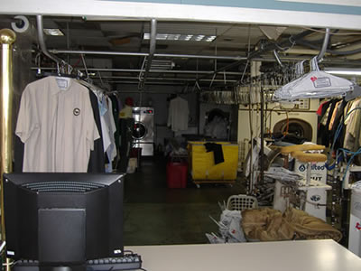
When I unlock the store in the morning, ideally by six a.m. -- which of course means more like six-fifteen or even more like six-thirty -- I'm struck, every time, by how quiet it is. I haven't started up the steam and compressed air that breathe life into the pressing machines. I haven't switched on the three big swamp coolers that disperse the chemical fumes, lint, and dust that collect in little Balkanized pockets throughout each section of the plant. The Widowmaker, its screens and buttons dark, dozes in the far corner, waiting for me to pull the big switch and bring it roaring awake.
It should be peaceful, and sometimes it is. Most of the time, though, I don't have a moment to linger inside the doorway and bask in the silence. I barge through the glass doors like some kind of drunken party crasher, only pausing to set a can of Rockstar Juiced and, if I'm lucky, a bag of sandwiches, on the counter on my way to the boiler room.
As I power-walk my way across the floor, I take stock: dress shirts (colored, white) in their white plastic bins; more bins full of clothes that have been tagged but not sorted; stuff in the stain-treatment bin; stuff on the sorting table; anything that might have been left for me over by the spotting board. I take it all in during the ten seconds it takes me to get from the front door to the boiler, and figure out my game plan. What needs to be done, in what order, before the store opens at seven.
What I get done, or don't get done, and how quickly or slowly I do it, in these next few minutes will shape the entire course of the day. All I want to do is lie down on a bed of dirty clothes and take a nap, but I know that if I slack off now, I'll end up paying for it later. I don't know when or how, but I'll pay -- with interest. So I don't take a nap. I stand in front of the boiler and, one big weary sigh later, I flick the switches and everything starts to move.
2006.12.31 | What
It's my birthday!
2007.01.11 | The Boiler Room
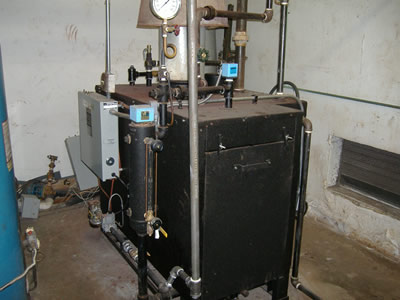
Water goes in. It gets boiled. Steam is produced from the boiling of the water. Pipes carry the steam throughout the plant. It goes to the pressing machines. The Widowmaker. The steam gun.
At the end of the day, I "blow out" the boiler, which means opening the valves that empty out the old water. Then I close the valves and refill the boiler. This is because the boiler is basically just this big metal box that gets rusty and full of whatever crap is in the water, so if I didn't blow it out every day, eventually it would be a big metal box filled with rust and crap.
There's this stuff called Boiler Guard that I add to the water when I refill the boiler. It helps keep the boiler clean. It looks a lot like black tea. Every day I fill the cup with Boiler Guard and carry it over to the boiler, and I get this impulse to take a sip. I hope I never actually do, because this stuff is corrosive as hell.
2007.01.11 | The Widowmaker
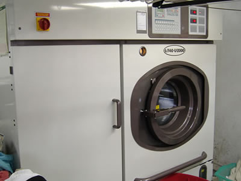
This machine didn't kill my dad. In fact, it probably improved his health during the few months he used it. But I like to call it the Widowmaker anyway, because it's a big, scary-ass name for a big, scary-ass machine.
The Widowmaker is where it happens. The dark, stinking heart of the dry cleaning plant. The way it works, the way I usually explain it to people, is sort of like those big washer-extractors at the laundromat, except with the dryer built in. You put the clothes in, it douses the clothes with cleaning solvent, agitates the clothes, then dries them out. It's more involved than that, of course, and if you're really interested you can read more about it in this Wikipedia entry. But that's the general idea.
Before I started working here, I had no idea how dry cleaning worked. I thought the "dry" part meant that no liquid was involved, so what I imagined was the clothes tumbling around in some kind of magical cleaning powder. But what "dry" really means is "no water." The clothes get wet, but they get wet with perchloroethylene, or perc. Except the process does require some water, mostly in the form of detergent, so "dry cleaning" really isn't completely "dry." (Nor does it really get the clothes that clean, in my opinion. Discuss.)
Perc is the reason I call the machine the Widowmaker. There's some debate over the question of whether or not perc causes cancer and liver damage, among other things. What I know is that perc is some nasty shit. I mean it's frickin' awful. You open the machine door and get a whiff of that stuff, it stings your eyes and makes you sick to your stomach. There's no way that shit isn't doing something bad to you.
I never saw the machine my dad was using before he replaced it with the Widowmaker, but just hearing the description makes me ill. With the old machines, you had to take the perc-soaked clothes by hand out of the cleaning chamber and dump them into a drying chamber. So you'd be bathed in this thick, toxic cloud all day. The new machines are self-contained, so I'm really only exposed to the fumes when I open the door, and then once a week I get a real good blast when I have to clean the sludge out of the machine.
The perc soaks the clothes, then the machine extracts the perc back out of the clothes, along with residual water and whatever crap that gets dissolved out of the fabric. The dirty perc goes into a cooking still, which distills out the perc and water -- they have different boiling temperatures, so boil off in stages -- and leaves behind this thick black goop called sludge. If you don't clean the sludge out of the still, it doesn't distill efficiently. So, about once a week I open up the still and scrape all the sludge out with this metal scraper. I usually end up feeling pretty nauseated afterwards, since I have to stick my head all the way into the still in order to get everything out.
The machine is Italian made, and the manual is translated from Italian, so you can imagine how clear, readable, and helpful it is. Figuring out how this thing works has been a monumental pain in the ass. My dad wasn't much help; my training usually went something like this:
Dad: Push these buttons.
Son: What do they do?
Dad: Just push the buttons!
So for the first few weeks, I just pushed buttons like a trained monkey. It was fine as long as nothing went wrong and I didn't screw up in any way.
You know that expression "you learn by making mistakes"? Yeah? Well, in the past six months I've earned a frickin' master's degree in dry cleaning.
2007.01.15 | Welcome to the Hellmouth
Just a few more pics to round out the grand tour of the store.
The view from the counter.
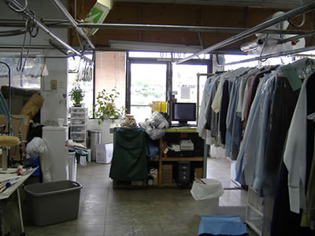
The view that I see for most of the day. Note the front door, and the world beyond, cruelly taunting me with the promise of freedom and fresh air.
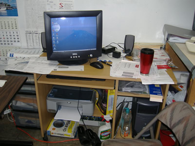
Where I am right now.
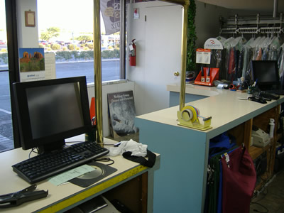
A closer look at the counter. This is the neatest this space has ever been.
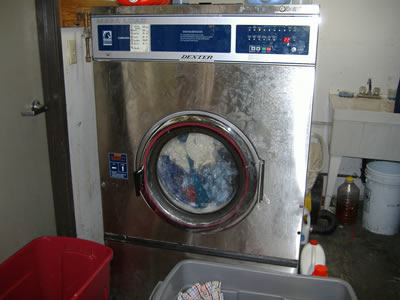
Say hello to Washy, the plucky washer-extractor sidekick of the Widowmaker.
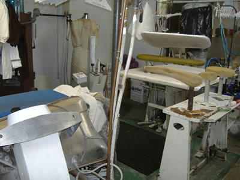
The pressing machines. There are three Latina ladies who do pressing here. One does pants, another does dress shirts, and the third does everything else. They stand there for about seven or eight hours a day, just pressing clothes. My job is tough, but I wouldn't trade jobs with the girls. I honestly don't know how they manage to just stand in one spot all day, bathed in steam -- especially in the summer, when it can get up into the 90s inside.
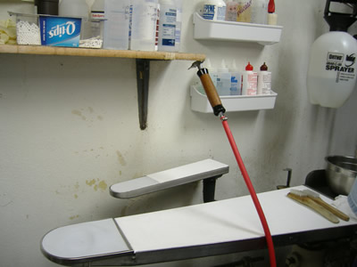
The spotting board. This is where I make the sordid remnants of your debauchery go away.
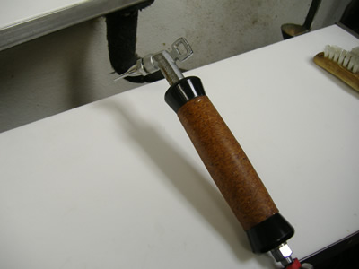
One of my spotting gurus once told me that the single most dangerous thing in a dry cleaning plant is the steam gun. He's right -- there really isn't anything else here that can destroy clothing as quickly and effortlessly as this thing, which blasts out a concentrated stream of steam or air that can instantly punch a hole in fabric if you're not careful.
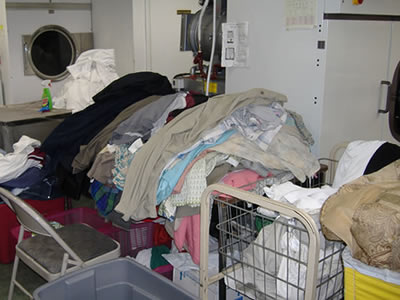
The sorting table. Apparently, not every dry cleaner sorts clothes, but they should. We divide them by color -- blacks/reds, bright colors, khakis, whites -- in order to prevent discoloration. Clothes tend to bleed when bathed in perc, more than they do in the laundry, so you really don't want to get, say, a red sweater mixed up with a pair of light brown pants. Sometimes an article of clothing is so poorly dyed that the colors run into themselves. That is what we in the biz call "a super sucky situation."
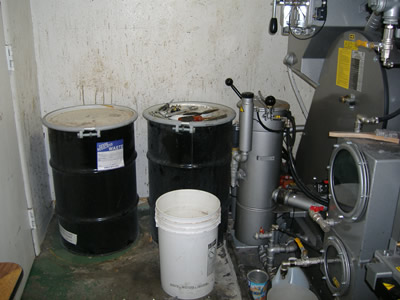
Now this is just gross.
- - - Comments - - -
COMMENT:
AUTHOR: mike
EMAIL: mike@whybark.com
IP: 168.103.169.91
URL: http://mike.whybark.com
DATE: 01/12/2007 10:18:05 PM
I envision a posse of dry cleaning blogs spring up like weeds, faithful in your wake. I envision you, mounting dry cleaning machinery on a flatbed and driving to Black Rock City each year. I envision the hidden bottles of Grey Goose under the counter, by the puppy treats and the baseball bat.
-----
COMMENT:
AUTHOR: bakiwop
EMAIL: bino1@hotmail.com
IP: 68.117.20.217
URL:
DATE: 01/13/2007 04:54:10 AM
i'm not what you would go a believer in a hgiher power but when i see machines and tools like this i always wonder just a bit - seriously, how the hell did people come up with this kind of stuff on their own? some of those machines look muy involved and complicated and basically some guy just thought that stuff up one day? the same goes for recipes. who thought one day to break down a bunch of wild wheat and throw in a bunch of other junk then heat it all up for a period of time and then eat it. or beer - who the hell would have thought up a process to make beer? i would have been one boring (and dead) cro-magnon. i would have walked around pointing at the pretty yellow, tall plants all oblivious and shit while my cave-mates were off building precursors to nuclear plants or some such.
good to know your around and kicking. that's some interesting stuff that dry cleaning stuff is. and by interesting, i mean and fascinating. and also by interesting i mean i'm glad it's /you/ explaining it, not me. all those buttons would make me cry - my dry clenaing business would have to be called '10-minute Dry Cleaning' who's motto would be 'You bring 'em in, I destroy them in ten minutes or less'.
2007.01.15 | Widowmaker Calls In Sick
O ye who receiveth sick days and/or floating vacation days at thy place of employment, look upon my sorrows and rejoice, for truly ye resteth in the bosom of excellent fortune, ye bastards.
The monumental force of will that it took...to overcome my torpor...to compel me to put on clothes...and come to work this morning...is so inadequately conveyed...by my egregious use of ellipses....
And then, of course, the Widowmaker broke. Sort of. It stopped in the middle of a cycle and started giving me crazy alarm codes. Something like this happens about once every six weeks, and results in a frantic call to Mr. Cho, a friend of my mom who runs another dry cleaner in town. Mr. Cho owns the exact same Widowmaker, and has gone through pretty much all of this crap many times, so I call him when the Widowmaker goes bonkers.
I call Mr. Cho. He's about as fluent in English as I am in Korean, so you can imagine how well the troubleshooting goes. On top of the language barrier, he's trying to explain how to check one gauge out of the crazy mass of gauges and pipes and valves on the back of this thing. It's like skating in the middle of a roller derby while trying to replace a CPU in a laptop for the first time in your life with a technician shouting instructions to you from the railing with a megaphone. Oh, and did I mention you're in Uzbekistan?
Somewhere in the middle of Mr. Cho's vain attempt to convey some kind of useful information to me, it occurs to me that the cooling water probably isn't getting to the cooling tank because the pipes are frozen. Duh! The machine's been sitting dormant in sub-freezing weather for about 36 hours. And in the time it took me to reach Mr. Cho, the pipes have unfrozen and the machine's working fine. I can start running loads again, which is good because the pressing ladies are running out of clothes to press, and the pants pressing lady has spent about 15 minutes pressing her one remaining pair of slacks.
Pillow can't hit my head soon enough.
- - - Comments - - -
COMMENT:
AUTHOR: Scott D
EMAIL: scottdonaldson@gmail.com
IP: 66.58.247.235
URL: http://www.dadinalaska.com
DATE: 01/15/2007 06:58:54 PM
But the pressing ladies will just stand there for all eternity, though, right? What a fiasco. Get some sleep soon and maybe you could put a little heating pad on Mr. Widow.
Hmmm... Is there any gender associated with your machinery? (no pun intended)
2007.01.16 | Consumer Reports
Here's a super secret tip for saving money at the dry cleaners. More to come.
Always pre-pay. Unless you go to a flat-rate cleaner that just charges a set price per item, you generally get charged extra for certain kinds of clothes, like silk or linen. More often than I'd care to admit, I miss these items at the initial mark-in and -- depending on the customer -- I correct their ticket with the appropriate upcharges.
I say "depending on the customer" because there are some customers you can do this with, and some you can't. Most customers don't pay much attention to the price that's on their ticket, so if the actual price ends up being a few dollars more, they don't even notice. Others scrutinize the crap out of their tickets and raise holy hell if they get charged anything other than what's on their slip. So, whether or not you upcharge them after the fact depends greatly on the kind of customer they are.
One time when it's practically impossible to get away with post-dropoff upcharging is when the customer pre-pays. There's no way you're going to tell a customer who's expecting to just pick up their clothes and go that they have to pay an additional $2-3, not if you care about keeping that customer. So, 99.99% of the time in those cases, we just eat the extra cost.
OMG if any dry cleaners knew I told you guys this I would be in so much trouble LOL.
- - - Comments - - -
COMMENT:
AUTHOR: Marissa
EMAIL: lecirage@yahoo.com
IP: 216.116.252.50
URL: http://www.feelingismutual.com/blog.php
DATE: 01/16/2007 02:28:30 PM
hmmmm... interesting. That would certainly help with our big cleaning bills (Why a restaurant would make their kitchen staff wear pressed white dress shirts, I'll never know. Sadistic bastards). I think I'd feel a little guilty using this tip though. Like I was cheating them out of tip money or something.
It's good to see ya around.
-----
COMMENT:
AUTHOR: Sherri
EMAIL: Sylkenvelvet@yahoo.com
IP: 68.59.150.10
URL: http://www.formyselfandstrangers.blogspot.com
DATE: 01/16/2007 03:23:21 PM
I so rarely use dry cleaners...none of my clothes are really worth that kind of care. Plus, one time we sent the Husband's white dinner jacket out to the local cleaners, it came back a distinct shade of ivory. I dunno how, but that bothered me.
And I promise that *I* won't breathe a word to the Las Vegas Drycleaner's mafia.
(Just glad you are posting again!)
-----
COMMENT:
AUTHOR: Scott D
EMAIL: scottshana@duringflight.com
IP: 66.58.247.235
URL: http://www.dadinalaska.com
DATE: 01/16/2007 05:08:38 PM
Oh! good tips... I will have to pass this on to my dad.
Also, do you see odd costumes come through? Are there a lot of Santa costumes with horrible stains that come in at around New Years?
-----
COMMENT:
AUTHOR: DRY CLEANERS OF THE USA
EMAIL: DRYCLEANERS@USA.ORG
IP: 168.103.169.91
URL:
DATE: 01/16/2007 06:12:45 PM
YOU ARE SUMMONED TO THE SEEKRIT MEETING HALL AT MIDNITE.
-----
COMMENT:
AUTHOR: Scott D
EMAIL: scottshana@duringflight.com
IP: 66.58.247.235
URL: http://www.dadinalaska.com
DATE: 01/16/2007 09:32:01 PM
Uh-oh....
-----
COMMENT:
AUTHOR: B
EMAIL: b@weirdsmobile.com
IP: 76.3.137.73
URL: http://www.weirdsmobile.com/b
DATE: 01/17/2007 07:33:34 AM
Marissa: Yeah, I would feel guilty, too -- mainly because I know that the poor sap behind the counter probably gets as much flak as I do when I screw up like that. I think it's balanced out by the fact that we eventually get to know the pre-payers and make damn sure to mark them in correctly. So I guess my tip only works for a limited time.
Sherri: Argh. Probably the reason the jacket came out looking like that is your dry cleaner washed it in dirty perc, and it picked up some loose dye. I've had several customers come in and say that this used to happen all the time with their whites at other cleaners. You're supposed to only use distilled, clean perc with a white load, but it seems like a lot of cleaners don't. It is true that dry cleaning usually doesn't get whites as clean as laundering, but something that goes in white shouldn't come out ivory.
Scott: The only costume that came in last year, that I can recall, is a security guard uniform after Halloween. It was pretty trashed, with a lot of weird multi-colored stains. I didn't ask! I do see a lot of puke stains after holidays, though.
DRY CLEANERS OF THE USA: Sorry fellas. I'm just a renegade dry cleaner who won't play by the rules!
-----
COMMENT:
AUTHOR: groovebunny
EMAIL: wabbit@groovebunny.com
IP: 68.224.168.139
URL: http://www.groovebunny.com
DATE: 01/17/2007 10:31:05 PM
Dry cleaning tips galore here! I love it! And don't worry B, we'd never rat you out.
2007.01.17 | Tip o' the Day
One thing many people don't do that they really ought to do when bringing clothes to the cleaner is keep track of what they're bringing. If you have a sizable load of stuff, count exactly how many items you have, and have the dry cleaner verify the count. Otherwise -- and this is especially true for things like dress shirts and other fairly generic-looking items -- you might end up with fewer clothes than you brought in, and never even know it. Sometimes, when we're bagging up orders, an order will come up an item short, and it's very hard to tell whether it's because something was misplaced, or because the mark-in count was wrong. Thanks to Miss H for the tip.
- - - Comments - - -
COMMENT:
AUTHOR: groovebunny
EMAIL: wabbit@groovebunny.com
IP: 68.224.168.139
URL: http://www.groovebunny.com
DATE: 01/17/2007 10:28:26 PM
That is a good tip. Thanks B! And also thanks for the welcome back in my comments. I've been gone far too long and really glad to come back see you're still up and running. :)
2007.01.19 | The Five Customers You Meet in Hell, Part 1
I'd say that ninety percent of my customers are perfectly decent, friendly people who are a pleasure to serve. Then there are the others.
The most annoying customers I deal with on a daily basis are the ones who bitch about price. "This is too much to pay for shirts!" they proclaim, reaching this conclusion following a thorough study of the shirt-cleaning market and an analysis of our shirt-cleaning procedures and our cost to price ratio. This type of customer needs schooling on a few points.
1. There are lots and lots and lots and lots and lots of dry cleaners, at least in this area. Which means there's a lot of competition. That should tell you a couple of things. One is that prices are generally going to be what the market will bear. There aren't any dry cleaners around here setting prices ten times higher than those of other cleaners. So if we're charging more than other dry cleaners, that should tell you that...
2. ...Not all dry cleaners are the same. There are discount cleaners and high-end cleaners. You can find cleaners in the Vegas area that charge ridiculously low prices, like $1.50 per item. And you know what? You get what you pay for. We get a lot of discount cleaner refugees here with horror stories about crappy pressing, long lines, shoddy cleaning, and bad service in general. You pay more here because the work is better and so is the service. Complaining about price here is like going into a fancy restaurant and demanding 2-for-1 entrees. You want cheap, you go to McDonald's. You go to Ruth's Chris, don't expect a $1 Value Menu.
3. As mentioned in #1, there are a shitload of dry cleaners in this area. The charge for a cleaning order is printed on the ticket we give customers at mark-in. If you don't like the price you see on that ticket, you can easily take your clothes back and schlep them over to a place with lower prices. I had a guy the other day who complained that he "wasn't told about" our shirt prices. This guy has been here several times, and each time he got a ticket with the cost of his cleaning on it, and when he picked up his clothes he got our copy of the ticket, which lists each item and the price for that item. If he was so interested in the topic of how much his cleaning costs, why didn't he just LOOK AT THE FRICKIN' TICKETS?
4. Dry cleaning, for most customers, is a luxury. There are people who have things like dry-clean-only uniforms and such who have no choice but to take them in, and I cut them breaks whenever possible. But 99% of the people who bring stuff in here do so either because they don't want to spend the time/energy cleaning and ironing their own clothes, or because they have expensive tastes in clothes and buy fancy stuff that you have to have professionally cleaned. In neither of these cases is anyone justified in griping about price. Cleaning is hard work, compounded by the constant fear of ruining someone's clothes and having to pay for them. Yet these people who only come in here for their own convenience want to bitch about paying for that privilege?
That's what really bothers me about this type of customer. They can never be satisfied, because their basic issue is having to pay anything at all for something they somehow feel entitled to. If there were such a thing as a butt-wiping service, these people would order that service, and then bitch and moan about having to pay to get their butts wiped.
- - - Comments - - -
COMMENT:
AUTHOR: Rich E. Rich
EMAIL: fancy@pants.com
IP: 70.170.99.1
URL:
DATE: 01/19/2007 11:11:18 AM
"$1.75??!! For that price, you should have to wipe it with your tongue!!!"
-----
COMMENT:
AUTHOR: Jim
EMAIL: nospambots@phalange.corrupt.net
IP: 65.167.132.200
URL: http://chaos.corrupt.net/
DATE: 01/19/2007 03:16:09 PM
The specks in your background keeps making me brush the monitor off. Pretty tricky!
When I worked in customer-involving field, I've always wished I could fire customers.
-----
COMMENT:
AUTHOR: Sherri
EMAIL: Sylkenvelvet@yahoo.com
IP: 68.59.150.10
URL: http://www.formyselfandstrangers.blogspot.com
DATE: 01/20/2007 08:35:47 AM
That's pretty consistant for anything involving customers, though. Many are reasonable, rational people who understand that, while they are paying for a service and deserve what they pay for, just because they touched that money does not make those dollar bills suddenly twice as valuable. Their presence gracing your storefront does not automatically improve your chance of a comfortable retirement, nor does it guarantee hordes of other customers arriving, ready to pay for the priviledge of breathing sanctified air.
Sometimes I wish I could live in the same world they do...well, maybe not.
-----
COMMENT:
AUTHOR: The Raz
EMAIL: KevinRazban@cox.net
IP: 68.111.86.4
URL: http://www.weirdsmobile.com/kevin
DATE: 01/21/2007 11:45:58 AM
One of my dry-cleaning pet peeves is having to deal with broken buttons on laundered shirts. It's driven me away from this one place I used to go to which charges $1.50 per laundered shirt to another place down the street which charges $1.75. Although I did see the odd broken button or two from the newer place, they replace those buttons no questions asked. The manager at the older place had the audacity to blame the broken buttons on the "cheap" buttons!
-----
COMMENT:
AUTHOR: B
EMAIL: b@weirdsmobile.com
IP: 76.3.137.73
URL: http://www.weirdsmobile.com/b
DATE: 01/22/2007 08:52:35 AM
Rich E. Rich: Who says I don't??
Jim: I read recently in a customer service book about the concept of "firing" customers who are so habitually problematic that it's not worth the time and expense to serve them, even if they want to keep coming. I've never done that, and I don't know if I'd even have the nerve to "fire" a customer, but my parents did on a couple of occasions, where they basically told the customer that we were unable to give them the kind of service they wanted and they should go elsewhere. I'm glad I don't have the magical ability to make customers go away, though, because this business would go under within a month.
Sherri: People do deserve to get the service they pay for, and maybe even more sometimes. That's why I don't mind the really picky customers, or the fussy ones. If you're gonna present your business as offering a high level of service, you have to deliver. I think that's why the perpetually dissatisfied types bother me so much. I'm already going the extra mile for customers, so the ones that take that completely for granted and still bitch and moan are that much more intolerable.
Raz: See, that's what that disgruntled shirt customer from the other day doesn't realize. The price you pay for extra service isn't for when everything goes right, it's for when things go wrong. For an extra lousy quarter a shirt he gets a cleaner that won't tell him to go f himself if a button gets lost or the shirt comes back with stains. But I guess some people would rather squabble and bitch their entire lives in order to save a few bucks.
-----
COMMENT:
AUTHOR: bergit
EMAIL: bergitolsen@yahoo.com
IP: 72.160.17.115
URL:
DATE: 01/24/2007 04:12:55 PM
Agreed. We get $3.25 a shirt without problem, but we deliver nothing but the best - always. (61 years in business)
Frugal people try to get the lowest price on most things, but spend a lot on items they really care about.
Cheap people are inconsiderate. For example, when getting a meal with other people, if their food costs $7.95, they'll put in $8.00, knowing very well that tax and tip mean it's closer to $11.
Cheap people are unreasonable and cannot understand why they can't get something for free. Sometimes this is an act, but sometimes it's not.
Frugal people will try as hard as cheap people to get a deal, but they understand that it's a dance and, in the end, they don't intrinsically deserve a special deal.
Cheap people's cheapness affects those around them. Frugal people's frugality affects only themselves.
2007.01.22 | Tip o' the Day
One thing a few of our customers do to reduce their cleaning bill is wash their machine washable clothes at home, and bring them in just for pressing. It's usually much cheaper per item, and you can get your stuff back sooner.
This doesn't necessarily apply, though, to men's dress shirts, so ask for prices. We have one customer who regularly brought in laundered shirts for press-only, thinking she was saving money. She was surprised when I told her that, because of our processes, it was actually a lot cheaper to have them laundered here.
2007.01.22 | The Five Customers You Meet in Hell, Part 2
Related to but distinct from the price whiners are the customers who are absolutely convinced that we're ripping them off somehow. Either we're gouging them, or we're stealing their clothes, or plotting to do some evil to them at the first opportunity. So they come in from day one with this ultra-suspicious attitude, despite the fact that we've given them absolutely no reason to suspect that anything's amiss.
To be fair, these are probably customers who have been burned by dishonest dry cleaners at one time or another, and they think they're just being careful consumers. For instance, one of our regulars is a refugee from another cleaner who apparently never actually cleaned his clothes. For four months, he was bringing in suits and being charged for cleaning that was never done, and only realized it when his clothes started smelling rank. Just amazing. So, while this customer's a really nice guy, he's pretty ready to believe the worst at the slightest hint of a problem.
The ones that really chap my hide are the suspicious ones who are hostile about it, practically accusing us of misdeeds before we've even touched their clothes. They're the ones who make a big show of examining their stuff when they get it back, to let you know that they're on to your chicanery. It gets to where you almost want to rip them off, since they're so convinced it's already happening!
- - - Comments - - -
COMMENT:
AUTHOR: Ricardo Pants
EMAIL: ricardopants@tinydeadbunny.com
IP: 70.56.164.71
URL: http://www.tinydeadbunny.com
DATE: 01/22/2007 01:47:16 PM
At the store I worked at I dealt with an even more disturbing customer- the "buddy". The lonely guy or woman who wants to sit and chat for an hour, forcing me to neglect the bag after bag of clothes that still need to be sorted and tagged before the pick up guys came in. I wanted to hate them, but I felt too sorry for them to sabotage their clothes out of spite.
-----
COMMENT:
AUTHOR: B
EMAIL: b@weirdsmobile.com
IP: 76.3.137.73
URL: http://www.weirdsmobile.com/b
DATE: 01/22/2007 02:51:36 PM
I don't usually mind the chatting, but like you said, when the work's piling up it's so crazymaking to be trapped in a conversation. Many customers don't seem to realize how frenetic this work is and that if you stop for any reason, the timing gets thrown off and it gets crazy. I do notice that a few people really seem to enjoy coming to the store for some reason. I wonder if there's some kind of secure feeling they get from being surrounded by clothes?
-----
COMMENT:
AUTHOR: Sherri
EMAIL: Sylkenvelvet@yahoo.com
IP: 68.59.150.10
URL: http://www.formyselfandstrangers.blogspot.com
DATE: 01/22/2007 05:02:01 PM
Maybe it's just the fact that you pretend to listen to them. Most of us will smile, nod, and walk away to the next task while they are talking still.
-----
COMMENT:
AUTHOR: The Raz
EMAIL: KevinRazban@cox.net
IP: 68.111.85.180
URL: http://www.weirdsmobile.com/kevin
DATE: 01/22/2007 09:40:52 PM
I used to go to a dry cleaning establishment which would constantly "up sell" to me - I'd ask for a shirt or pair of pants to be laundered and the guy behind the counter would shame me into having it dry cleaned. This pattern got on my nerves after a while and diminished my trust in the establishment. I just got sick of his schtick and decided to go elsewhere. Anyway, try to avoid up selling as much as you can.
-----
COMMENT:
AUTHOR: B
EMAIL: b@weirdsmobile.com
IP: 70.170.99.1
URL: http://www.weirdsmobile.com/b
DATE: 01/23/2007 06:03:11 AM
Sherri: Ha...yeah, I guess so. I am rarely the one to end any conversation. Most of the time, though, the customers do have interesting things to say. I found out recently that one of my regulars also used to live in Madison, so we had a lively nostalgic chat about that town. On the other hand, a lot of the customers just tend to go on about their yachts or palatial second homes in Laguna Beach, and I'm like, "Uh huh...wow, you certainly are super rich. Now if you'll excuse me I need to go back and steam the urine out of your pants."
Raz: Yeah, that is pretty annoying. I usually just follow the customer's instructions about stuff like that, unless what they're asking for is patently dumb ("I'd like this cashmere sweater laundered") or pointless (we charge the same for pants whether they're laundered or dry cleaned). If they ask about the difference, I'll just explain the pros and cons of each method and let them make up their own mind. All in all, I'd make a pretty lousy car salesman.
2007.01.23 | The Week in Brief
Mondays and Tuesdays are the busiest. Wednesdays, not so much. Thursday is probably the least busy day, but the worst for me because by then I'm pretty beat. Friday gets busy again.
Saturdays are a mixed bag because the pressing ladies aren't here, which means I'm not going crazy trying to get the clothes out of the machine fast enough to keep them busy. But it's also when the 50-item customers usually come in, with Hefty bags full of clothes that I have to tag and sort.
Sundays we're closed.
2007.01.23 | The Five Customers You Meet in Hell, Part 3
We have one customer here at Pseudonymous Cleaners who regularly brings in dress shirts. He really likes coming here, and always says so. He thinks we do a very good job. Let's call him Mr. Fussy. I like Mr. Fussy. He complains a lot, but he knows he does and he's apologetic about it. He just likes what he likes and I can respect that. Usually.
A while back, Mr. Fussy had a complaint about some of his shirts being wrinkled. This was when my mom was travelling and H and I were running the shop. Long story short, it turned out he always gets his shirts dry cleaned, but we didn't know that, so we were laundering them, like we usually do with dress shirts.
So after that we made sure to dry clean his shirts like he asked. All good? No! Because then he just started complaining more, that his shirts weren't getting pressed right. He wanted them ironed super crisply, and they were coming back all soft. We were like, "WTF?" Because one difference between laundered and dry cleaned shirts is that dry cleaned shirts generally have a softer texture and aren't pressed as cleanly. We couldn't figure out how Mr. Fussy had been dry cleaning all his shirts and getting them super crisply pressed.
After my mom came back to the store, I told her about the situation. She was like, "What! Why are you dry cleaning his shirts?" I said, "That's what he says he always gets!" She said, "He always asks for that, but we launder them!" I was like, "WTF?"
As it turns out, Mr. Fussy is one of the Five Customers You Meet in Hell: the kind that think they know what they want, but don't actually know, but they'll insist on getting what they think they want anyway. What was going on with Mr. Fussy is that, as a guy who's really into his clothes, he wants dry cleaning because -- this is just my guess -- he believes it's the superior cleaning method. However, he doesn't really understand that it won't produce shirts the way he likes them.
So, I'm now in a position with Mr. Fussy where I can't tell him the truth, because we (by which I mean my mother) have been deceiving him the whole time, albeit for his own good. So I just have to keep up the charade.
I also have a customer, Mr. Jerkass, who used to habitually complain about his pants not having a hard enough crease. "I want a REALLY HARD crease!" he'd bellow. We'd end up using like half a can of spray starch (as opposed to laundry starch, which goes into the laundry rinse) trying to get his creases super stiff. Finally I said to him, "Why don't we just starch your pants, and that way they'll have the stiff crease to begin with?" Mr. Jerkass was like, "NO NO! I don't like starched pants!"
So, one day I got fed up and just starched his pants. Guess what? No complaints, then or thereafter.
And then there's the old lady who brought in a comforter. "I want this laundered, not dry cleaned!" she said. "And put some tennis balls in when you dry it, so it'll get nice and fluffy!"
"We always put tennis balls in the dryer when we dry comforters," I said.
"No no, I want you to put tennis balls in there!"
"Yes, ma'am."
The comforter was filthy because she'd stepped all over it in the parking lot coming in (and then said, "there's some grime on one corner"), so I had to do a lot of pre-treating before I washed it. She got it back, and a couple days later called and complained because the comforter smelled bad.
"You didn't wash it, you dry cleaned it!" she said.
"No, honestly, we laundered it!" I said. "It smells funny because I had to pre-treat it a lot, and it still smells a little like the pre-treating solution."
"I was in the cleaning business 20 years, and I know when clothes have been dry cleaned!" (Perc smells nothing like the pre-treating stuff I use.)
Sigh. "Okay, bring it back in and we'll launder it."
"And dry them with tennis balls this time!"
"Yes, ma'am."
- - - Comments - - -
COMMENT:
AUTHOR: nichole
EMAIL: jumbledpile@yahoo.com
IP: 198.150.40.60
URL: http://www.madisonatoz.com
DATE: 01/23/2007 11:05:10 AM
Have I maybe met some of these people at the library? Why yes, I think I have. Too funny.
Thanks for the spate of new posts lately. They make my day every time.
-----
COMMENT:
AUTHOR: Sherri
EMAIL: Sylkenvelvet@yahoo.com
IP: 68.59.150.10
URL: http://www.formyselfandstrangers.blogspot.com
DATE: 01/23/2007 01:38:33 PM
If it weren't for customers like this, you'd have nothing to talk about ;)
Thanks for making me snarf my milk :D
2007.01.23 | Tip o' the Day
Before you drop your clothes off at the cleaners, always check the pockets and buttons. It's amazing, the stuff I find in people's pants and coat pockets. Everything from credit cards to condoms. One guy brought in a shirt that had a torn-out page from a girly mag neatly folded in the pocket. And yes, I show everyone the stuff I find and we have a good laugh over it.
My personal code when it comes to found money is, if I know who it belongs to, I'll return it. But if it just comes out of the machine and I have no way of knowing which pocket it came from...it's mine!
The other thing is buttons. They fall off of clothes all the time during the cleaning process, almost always because they were loose to begin with. Clothes roll around in a big drum with 35-40 pounds of other clothes, and it's very easy for a button to get pulled off. If you tell the dry cleaner in advance, they can tighten the button before cleaning, usually for no charge.
Also, many of you ladies have fancy duds with buttons that have rhinestones embedded in them. Perc will dissolve the glue right out from under them, unless the button is covered (we use foil) and the item placed in a mesh bag to keep the covering from getting rubbed off. It's good to let the dry cleaner know if you're dropping off something like this, because you can't assume that they'll catch it.
- - - Comments - - -
COMMENT:
AUTHOR: Jim
EMAIL: chaos@corrupt.net
IP: 67.176.255.173
URL: http://chaos.corrupt.net
DATE: 01/23/2007 11:08:22 PM
Man, the girly mag page in the shirt is a pretty ominous warning about the pants. Also, a pretty good first chapter for a noir novel about a dry cleaner/private eye.
-----
COMMENT:
AUTHOR: B
EMAIL: b@weirdsmobile.com
IP: 76.3.137.73
URL: http://www.weirdsmobile.com/b
DATE: 01/24/2007 07:59:22 AM
Yeah, believe me, I was extremely careful with the pants. Ditto for the pants that have condoms in the pockets.
If I wrote a dry cleaning novel, it would definitely at some point have somebody pushed into a dry cleaning machine. It's just too scary a machine not to use somehow.
-----
COMMENT:
AUTHOR: Amber
EMAIL: amusicbuff@gmail.com
IP: 209.204.185.110
URL:
DATE: 01/24/2007 08:50:52 AM
This has nothing to do with dry-cleaning but you made me remember how when my husband and I were doing the long-distance dating thing before we got married, he wanted some sexy pictures of me sent to him. So I dressed up in a garter, lace-top stockings, lace underwear and a matching lace bra and I also put on his old paramedic T-shirt he'd sent me with nothing under it (!!!!) and took several pictures with my camera.
Obviously I couldn't ask anyone to hold it and I had no tripod, so I had to take a kajillion of them with the damn thing balanced on a dresser and me posing across from it, hoping some turned out.
I was so excited to see the results that I took it to a one hour photo place not far from the house. When I came back to pick them up, I thought it was odd the way the young guy behind the counter kept staring at me. He even went in the back and got his buddy and it seemed like they were both fussing around with stuff while the other one got my pictures "ready", darting strange looks at me. I told myself to stop being silly and "what an imagination you have, Amber", etc., certain that they had no clue what my pictures were.
I pulled them out of the envelope right there in the parking lot and was happy to see several shots had turned out very well; quite sexy and more than suitable to send to Dan.
Dan was thrilled with them, of course, effusive in his praise and only days later did I mention how paranoid I had been about picking them up, imagining how they were staring at me and so forth, silly me. Dan belly-laughed and told me that they oh yes, they DO view the pictures to make sure they are aligned properly.
Great.
To make it worse, just last year while out with close friends who had also dated long distance before marrying, we were swapping funny stories, Dan told this one and added that one picture clearly showed that I was wearing nothing under that shirt. I protested and said that although I had no problem sending sexy lingerie shots, or the shirt hanging down to almost my knees and making him *wonder* if I had anything on underneath, I would NEVER have taken a pic of me actually showing anything, so when we got home, he dragged out those old pictures and yup; one of the shots of me sitting on the floor had his old EMT shirt riding up a little and it was very obvious I had nothing on underneath.
Not having a built-in male "porn" eye, I had missed it completely. *gulps*
Learned my lesson, I did. :)
-----
COMMENT:
AUTHOR: B
EMAIL: b@weirdsmobile.com
IP: 76.3.137.73
URL: http://www.weirdsmobile.com/b
DATE: 01/24/2007 12:16:23 PM
Yikes! That is hilarious. Thank God for digital cameras, eh?
2007.01.26 | The Five Customers You Meet in Hell, Part 4
So many annoying customers, so little room in hell. Here are the final two -- that I'm ranting about in this series, anyway.
One is the customer who always asks for same-day or next-day service, which we don't normally do, but then never picks up their clothes on time. This is annoying because, as I said before, the dry cleaning process demands a great deal of coordination and efficient use of time and energy. Anything that interferes with that process causes problems all the way down the line.
At Pseudonymous Cleaners we have a two-day turnaround, which allows us to do a decent job on the clothes. Sometimes we have customers who need faster service, because of travel or some event, like a funeral. We're always happy to accommodate them, but it does kind of throw a wrench into our process. We have a few customers, though, who always ask for the next-day or same-day service, and even that wouldn't be such a pain in the ass if they actually came back the next or same day, so we wouldn't feel like we did all that rushing around for nothing. But sometimes they don't come back for a week!
I guess what we really need to do is impose hefty rush charges on these people, to discourage this kind of behavior, or at least make it worth our while to do all that extra work for them. Ah well.
The customers who inhabit the inner circle of my own personal dry cleaning hell, though, are the ones who try to take advantage of our excellent customer service. A typical example of this is the customer who tries to hold us responsible for damage to their clothes that is not our fault. There's one guy who would bring in these worn-out, threadbare dress shirts every week. These shirts were just barely hanging together. The collars were frayed, the seams were coming apart. So, of course, eventually the threads gave out on one of the shirts and they ripped during the laundering. This guy tried to blame us for this, saying that, because it happened here, we were responsible, and that we should replace his shirt -- with a new one -- for free. Rare is the occasion when we tell a customer to go take a hike, but in this case we had to. I mean this is ridiculous.
The other, more common example of this is people who bring in stuff for alterations, and we do the repairs as instructed, and when they get the clothes back, don't like how they fit and demand that we re-do the alterations for free. Listen, if you bring in pants and tell us to take off two inches, and we take off two inches, and they're still too long, that's not our fault.
We had one mofo bring in pants for hemming, and after picking them up he brought them back in and claimed that we never actually hemmed the pants. Puzzled, we took them back and examined them -- they weren't the same pair of pants!
We're pretty generous about guaranteeing our work and giving customers the benefit of the doubt when there's a problem, so people who take advantage of that are just plain low.
- - - Comments - - -
COMMENT:
AUTHOR: Jim
EMAIL: chaos@corrupt.net
IP: 65.167.132.200
URL: http://chaos.corrupt.net/
DATE: 01/26/2007 11:54:01 AM
Pwned! Scamming in order to get free hemming is impressively pathetic.
-----
COMMENT:
AUTHOR: Sherri
EMAIL: Sylkenvelvet@yahoo.com
IP: 68.59.150.10
URL: http://www.formyselfandstrangers.blogspot.com
DATE: 01/26/2007 01:44:51 PM
OK, this one I can address. I, too, work in a business where "instant turnaround" is often requested, and often ludicrous in its dimensions. I work at an industrial printing company (printing stuff for equipment like nameplates or more complex items like electronic control panels). Our fastest turn around is 24 hours under particular conditions. Our company charges premiums for these services, all listed up front and in plain text. If you want it the next day, fine, but it's costing you this much money and there's no negotiating (unless you are one of our FAVORITE customers) and you have to fall inside our guidelines -- you can't give us something where you want to fiddle with colors or design because it won't happen. If we aren't ready by the agreed time, you don't pay, but if we do, you pay REGARDLESS of when you decide you want it (occasionally customers will delay shipping). I'd recommend that sort of service charge with explanation right up next to the drop off.
As for Le Scam Artiste -- digital camera, bud. You get nasty damaged clothing, you take a picture, preferably with him holding them. Invest in one of those insta-photo printers that don't require a computer. Print it, date it and get him to sign it that this is, indeed, the condition of his clothing upon receipt. Yeah, it might take a few minutes and the value of doing it would depend on how much of a pain it is when it happens. But sometimes there is a sweetness in bedeviling a guy like that. Just having the camera might prevent him from pulling this shit. Just the THREAT that you are prepared to call his bluff.
heck, I think I'd do it for any request for repair, just to make sure that you know what you are doing and the customer knows you know. It would also be good for very valuable/complicated cleaning orders and, of course, snapping weirdness to post about.
-----
COMMENT:
AUTHOR: B
EMAIL: b@weirdsmobile.com
IP: 76.3.137.73
URL: http://www.weirdsmobile.com/b
DATE: 01/26/2007 02:18:20 PM
Jim: Yeah, it is a pretty good scam, but I think it would probably only work in a place where the person you were dealing with was not the person who does alterations. If, like us at the time, they send their alterations out, then it's very possible for stuff to come back without anything being done on it. Another scam that I'm pretty sure has been tried here before is getting your dry cleaning, wearing some of it, and then bringing it back claiming it wasn't cleaned right. Kind of a sad way to get free cleaning, but you know...people...feh.
Sherri: Yeah, the rush charge issue has been a contentious one around here. We actually did in the past charge a pretty exorbitant same-day service fee (100%), but that sort of fell by the wayside. Now it's supposed to be 20%, but nobody ever enforces it. I guess we should.
We haven't, for the most part, had much trouble with scam artistes here. Mostly I'm content to let my mom handle those situations. I just work here!
-----
COMMENT:
AUTHOR: Lenka
EMAIL: reznicek111@gmail.com
IP: 128.135.47.218
URL: http://farkleberries.blogspot.com
DATE: 01/26/2007 03:03:37 PM
Ugh- that is incredibly frustrating. My mom runs a small tailoring shop, and she's mentioned similar cases. For example, someone will stop by the shop an hour before closing time and beg, beg her to make alterations for some urgent event, promising to pick up and pay for the work the first thing the next morning.
Like your family's establishment, she doesn't have any offical same-day or next-day service - but many times, in the interest of pleasing the customer she'll also agree to do the work, staying late to get the job done. Then, Mr. or Ms. "I need it NOW!" doesn't pick up the repaired items until the following week, or later. It's a hard call, because of course you want to do right by your customers by exceeding expectations.
One idea that I've mentioned to my Mom for her business: perhaps imposing a daily storage fee (clearly specified and labeled up-front, of course) for rush orders not picked up by an agreed-upon time, to help offset the time and expense of re-scheduling other jobs?
2007.01.26 | The Seven Habits of Awesome Customers
These things make your dry cleaner a HAPPY dry cleaner:
1. Checking all pockets before you bring in your clothes;
2. Informing your dry cleaner about any stains or loose buttons, or "problem" clothes that need special attention;
3. Unbuttoning all shirt buttons;
4. Telling your cleaner if you know you're not going to be back for your clothes for a while (this way we can spend more time, if need be, working on stains and things, knowing we don't have to rush stuff out);
5. If you do have a difficult stain on an item, letting your cleaner know how aggressively you want them to work on it -- sometimes people can live with the stain but don't want the clothing damaged, and sometimes they just want the stain out regardless, since they can't wear the item with the stain on it;
6. Bringing smaller loads of clothes more frequently instead of lugging in a gigantic Hefty bag once a month (this also cuts the chances of lost items WAY down);
7. Not rubbing your dog or cat all over your black woolen coats, as many of our customers apparently do on a regular basis, some even coating their pet with barbecue sauce beforehand (sick bastards).
It's not like I'll curse your name if you don't do any of these things...except maybe #7...but customers who do these things make my life a lot easier.
- - - Comments - - -
COMMENT:
AUTHOR: Scott D
EMAIL: scottshana@duringflight.com
IP: 66.58.247.235
URL: http://www.dadinalaska.com
DATE: 01/26/2007 04:26:27 PM
Heres a tip that I have for animal hair: Get some masking tape and wrap it around your hand several times sticky-side-out (or you can use a lint roller but they tend to be less tacky) and make yourself a sticky mitten.
Wipe any access animal hair off your clothes before you bring it it.
;)
2007.01.26 | You're Fired!
My mother "fired" a customer the other day. I'm glad I didn't have to be the one to do it, but it sure was satisfying to watch.
The fired customer was a real pain in the ass. He would bring in one pair of pants each week, and a day or so after picking them up he would bring them back in, complaining bitterly that they weren't pressed right, and demanding a re-press. Of course the pants were pressed just fine, and the guy was just trying to cadge a free ironing on pants he'd worn.
We let him get away with it for a while, since it was just one pair of slacks that were easy to press. But it really got on our nerves, especially since he was such a jerk about it. There isn't one single time he came in that he was ever anything but sour and griping. I almost felt sorry for the miserable prick; I don't think he had a single non-hostile encounter or transaction in his entire day. I'm sure you've encountered these guys many times...Lord knows I have.
Anyway, my mother finally got sick of his crap and let it be known that he wasn't to be given service anymore. The last time he came in, bitching about his pants as usual, my mom told him we were "too busy" to take his clothes, and he stormed off in a huff. I guess it's possible he could come back, but I doubt it.
The thing that always cracked me up about him is that, whenever he'd complain, he'd say something like, "I spend a lot of money here...do you want to lose my business?" Uh, yeah, I'd sure hate to lose that $3.75, minus the labor cost of re-pressing his pants, per week.
- - - Comments - - -
COMMENT:
AUTHOR: Scott D
EMAIL: scottshana@duringflight.com
IP: 66.58.247.235
URL: http://www.dadinalaska.com
DATE: 01/26/2007 04:23:07 PM
Mom's kick ass. I would have loved to have seen the look on his face when he was 86'd!
-----
COMMENT:
AUTHOR: Sherri
EMAIL: Sylkenvelvet@yahoo.com
IP: 68.59.150.10
URL: http://www.formyselfandstrangers.blogspot.com
DATE: 01/29/2007 06:59:46 AM
Fantastic! Contrary to popular belief, customers are NOT always right. One of the more delightful events where I work is when a customer gets super fussy over something like a color match or a .005 line thickness. We've had jobs go back and forth like a ping pong ball, with us KNOWING that the result will look awful and the customer INSISTING on the particular specifications. We will produce to spec. We will get approvals and signatures. We will ship it off. The customer will hate it and want to send it back for credit.
We will apologise that what they said they wanted isn't REALLY what they wanted, and offer to open a new sales order (with a new invoice). Sometimes we will even give them a return number, which will be denied, but we will throw the parts away for them.
My husband will always giggle like an evil monkey when this happens (he's usually the one wrestling with the situation).
-----
COMMENT:
AUTHOR: The Raz
EMAIL: KevinRazban@cox.net
IP: 68.5.143.162
URL: http://www.weirdsmobile.com/kevin
DATE: 01/29/2007 10:05:48 PM
Why do I get the feeling this guy is going to come back? He'll be a bit contrite at first, and then he'll start trying to take advantage again.
-----
COMMENT:
AUTHOR: Allyson (Enigma)
EMAIL: phillykat@gmail.com
IP: 68.46.86.154
URL: http://phillykat.livejournal.com
DATE: 02/05/2007 07:51:23 PM
I hate customers like that. I get great satisfaction tripping them up and making them look like idiots. Of course firing them is good, too. w2g b's mom!
2007.01.29 | Quiet Moments Before the Storm
Getting to work early is one of those mixed-feelings kind of situations. Getting out of bed early is of course hateful to all right-thinking people, but it's pretty sweet to come in when it's still quiet and know that you've got some time to settle in and get a head start on things.
- - - Comments - - -
OMMENT:
AUTHOR: Ricardo Pants
EMAIL: ricardopants@tinydeadbunny.com
IP: 12.40.184.2
URL: http://www.tinydeadbunny.com
DATE: 01/30/2007 10:16:16 AM
That's true. When I would come in early on a Saturday morning, and all the pressing machines weren't turned on, there was a strange zen feeling I'd get. I actually didn't mind being there so early.
-----
COMMENT:
AUTHOR: B
EMAIL: b@weirdsmobile.com
IP: 76.3.137.73
URL: http://www.weirdsmobile.com/b
DATE: 01/30/2007 11:42:05 AM
It's funny how relaxing it is when the pressing ladies are gone and the machines are off. I guess a lot of my stress here is just from trying to get clothes out of the machine fast enough to keep them busy.
-----
COMMENT:
AUTHOR: e
EMAIL: newsyoucanuseornot@gmail.com
IP: 24.173.99.235
URL: http://www.allaboute.net/blog
DATE: 01/30/2007 12:20:10 PM
I come into work early about twice a week. The phones aren't ringing yet, and I can just get settled in, check my favorite feeds (and work email), and drink my chai latte.
Plus, if I come in early, I try to leave a little early that day.
-----
COMMENT:
AUTHOR: B
EMAIL: b@weirdsmobile.com
IP: 76.3.137.73
URL: http://www.weirdsmobile.com/b
DATE: 01/30/2007 02:11:34 PM
That's the one thing that's kind of thankless about coming in early here -- no matter when I come in, I can't leave early!
2007.01.30 | Not Atypical
Something smells like dirty socks around here.
- - - Comments - - -
COMMENT:
AUTHOR: e
EMAIL: newsyoucanuseornot@gmail.com
IP: 24.173.99.235
URL: http://www.allaboute.net/blog
DATE: 01/30/2007 12:17:48 PM
ewww. It could be worse, I guess.
-----
COMMENT:
AUTHOR: Jim
EMAIL: chaos@corrupt.net
IP: 65.167.132.200
URL: http://chaos.corrupt.net/
DATE: 01/30/2007 12:48:08 PM
I bet it's dirty socks!
-----
COMMENT:
AUTHOR: B
EMAIL: b@weirdsmobile.com
IP: 76.3.137.73
URL: http://www.weirdsmobile.com/b
DATE: 01/30/2007 02:08:54 PM
I never did figure out what the dirty sock smell was. The important thing is -- it went away eventually!
2007.01.30 | I Assure You We Are Open
I'd be happier, I think, in a job where I had a set amount of work to do during the day, and when I got done with that set amount of work I could either goof off, or get a head start on the next day's set amount of work.
Probably the most nerve wracking aspect of being here at the dry cleaners, especially in the morning when I'm at my laziest, is not knowing when or if customers are going to come in. I sit here, glancing furtively out the window between sips of coffee, filled with dread and anticipation of that next car to pull into the parking space in front of the store. And out of that car, a customer who might have two shirts to clean, or a Hefty bag full of clothes.
And of course, it's always when you're right in the middle of something that someone will walk in.
- - - Comments - - -
COMMENT:
AUTHOR: Ricardo Pants
EMAIL: ricardopants@tinydeadbunny.com
IP: 12.40.184.2
URL: http://www.tinydeadbunny.com
DATE: 01/30/2007 10:18:15 AM
For me it was always when I was in the bathroom, which was on the other end of the building. We had speakers everywhere that would beep when someone came in. So when it went off I'd scurry out, still zipping up my pants, to get to the counter.
-----
COMMENT:
AUTHOR: B
EMAIL: b@weirdsmobile.com
IP: 76.3.137.73
URL: http://www.weirdsmobile.com/b
DATE: 01/30/2007 11:40:32 AM
Having to go to the bathroom when I'm by myself in the store -- pure adventure! Will I have time to unload my burden before someone comes in? Who knows!
So far I haven't gotten up the courage to try "#2" in this fashion, but I imagine it's quite suspenseful.
-----
COMMENT:
AUTHOR: Ricardo Pants
EMAIL: ricardopants@tinydeadbunny.com
IP: 70.56.164.71
URL: http://www.tinydeadbunny.com
DATE: 01/30/2007 05:31:51 PM
Oh, it's a thrill. You should try it sometime when you feel like you have nothing to lose.
-----
COMMENT:
AUTHOR: Sherri
EMAIL: Sylkenvelvet@yahoo.com
IP: 68.59.150.10
URL: http://www.formyselfandstrangers.blogspot.com
DATE: 01/31/2007 06:53:24 AM
Ah, you bring back memories of my first job as a convenience store clerk in a cheap-ass chain. Only one clerk in the store at a time, you know, and I was always the closer because I was the only young, single woman. The two other clerks and the manager were either older or married or both.
Nothing like hearing that "ding-ding" when you are occupied and wondering who is ripping off merchandise while you can't do a thing about it.
2007.01.30 | Public Service
Quite a few people stumble upon this site via Google searches. Most of the time, this blog isn't quite what they were looking for. I'd like to remedy that problem with a little feature I like to call...
clean and laundered difference
I get this question all the time -- what's the difference (in the results) between dry cleaning and laundering? Well, it depends on the type of fabric, but generally speaking, dry cleaning gives clothing a softer feel, maintains the finish of the fabric, and doesn't shrink. It also does a better job on oil-based stains than laundering.
Laundering, on the other hand, cleans more thoroughly overall, is better on food/organic stains and is less prone to fade bright colors. It also tends to get whites whiter. If you want anything starched or crisply pressed, laundering is the way to go.
Of course, there are certain things you always want to dry clean rather than launder (woolens), and things you always launder rather than dry clean (anything silkscreened).
slacks that don't show stains
Of the pants that I check over for stains, the tricksiest have been dark (but not super dark) brown, usually made of something tweed-ish, rough-woven. The brown shouldn't be a uniform solid color, but that kind of speckled brown. You can pretty much urinate in these pants and it won't show.
- - - Comments - - -
COMMENT:
AUTHOR: P. Pants
EMAIL: pee@europeanhere.com
IP: 70.170.99.1
URL:
DATE: 01/31/2007 03:28:20 PM
You can pretty much urinate in these pants and it won't show.
EXCELLENT
2007.02.01 | Waking Up Is Hard to Do
There's this "coffee replacement" sound file created by Stefanos Karagos at Anabubula, that is supposed to engergize you by stimulating your brainwaves into an energized state.
I tried it this morning on the way to work. I wasn't expecting anything too dramatic, and indeed, about the only effect that I was immediately aware of was that it made my cheeks tingle. It was extremely relaxing, though, and I have to admit I stepped pretty lively once I got to the store.
It sounds like bird noises with a bunch of subtle rhythmic sounds mixed in. It's like running a clothes dryer in a rainforest while someone operates a jackhammer a few miles away.
Between this, the coffee, and the Wellbutrin, I guess I should be pretty well stimulated.
- - - Comments - - -
COMMENT:
AUTHOR: Consuelez
EMAIL: dlean@comcast.net
IP: 17.221.39.90
URL:
DATE: 02/01/2007 02:17:30 PM
It's pretty relaxing. Not bad. Good to have you back, man!
2007.02.07 | Another Bullshit Day in Las Sucka$$
Sometimes. I'm just so fucking sick of doing this shit.
2007.02.07 | Stank Sauce
Some of our customers smell funny. Like this one guy, a regular customer. His clothes always -- always -- smell strongly of A-1 steak sauce. I can't figure it out. There is no steak sauce on his clothing. The clothes are obviously not waiter's uniforms. Yet the smell of A-1 is overpowering. It's kind of nauseating, actually. You know how some smells can be delicious in the right context, but horrible in the wrong context?
I don't know if it's BO or some kind of insane cologne.
- - - Comments - - -
COMMENT:
AUTHOR: Jim
EMAIL: chaos@corrupt.net
IP: 65.167.132.200
URL: http://chaos.corrupt.net/
DATE: 02/07/2007 12:57:51 PM
It's disturbing when BO is so extreme that it starts to smell like food.
-----
COMMENT:
AUTHOR: Jacky 'n Jimy
EMAIL: ed@edmann.net
IP: 151.196.228.22
URL: http://jackynjimy.wordpress.com/
DATE: 02/07/2007 01:50:36 PM
Is it possible he perspired that smell. That can happen with curry I think. Seems you would have to eat a lot of A-1 to do that though!
-----
COMMENT:
AUTHOR: taramis
EMAIL: taramis@fastmail.fm
IP: 24.8.53.226
URL:
DATE: 02/07/2007 09:31:13 PM
Urg. I *used* to like A-1 sauce. This is so weird!
-----
COMMENT:
AUTHOR: Amer
EMAIL: amusicbuff@gmail.com
IP: 209.204.185.110
URL:
DATE: 02/08/2007 08:40:36 AM
Maybe he eats at Denny's, last time I ate there (waiting for the car stereo guys next door to put Sirius radio in my car and there was no where else to go for coffee) it smelled like A-1 Sauce. Strongly.
Or maybe your guy was in there eating, smelling up the place. Just...weird.
Dennys. Ew.
-----
COMMENT:
AUTHOR: Amber
EMAIL: amusicbuff@gmail.com
IP: 209.204.185.110
URL:
DATE: 02/08/2007 08:41:54 AM
Er, that was me Amber, not Amer. Whoever the hell she might be...fucked up name, gotta say. ;-P
-----
COMMENT:
AUTHOR: Scott D
EMAIL: scottdonaldson@gmail.com
IP: 67.187.238.237
URL: http://www.dadinalaska.com
DATE: 02/08/2007 09:19:55 AM
That is quite strange... cologne does go *bad* after a while and a long-time "user" may never notice....
2007.02.09 | Slow Morning
I hate saying things like this, because you know as soon as you say it, eight people will walk through your door, but boy is it slow this morning. Usually by this time at least a couple of customers will have come in, but today: nobody. I guess this makes up for yesterday, when a troop of customers marched in practically as soon as I opened the frickin' doors.
I like the quiet mornings that start slow and gradually ramp up over the course of the day. But the really quiet mornings are kind of nerve-wracking, because you start to settle in and get used to goofing off, become engrossed in some article on the web, and then when someone finally does show up, it's jarring and so aggravating to get off the "leisure" track and back onto the "work" track.
Oop, here comes someone.
2007.02.09 | Site Shite
At some point in the near future, I am going to completely reorganize the Weirdsmobile site. I launched Weirdsmobile several years ago as a loose confederation of pseudonymous bloggers. As of 2007, most of the "Team Weirdsmobile" bloggers have gone on to other things, so the original purpose of the site has pretty much evaporated. I'm not sure yet what the new form of Weirdsmobile will be. I'd like to replace the static main page with something featuring actual content. Chances are I will keep Cleaning Las Vegas going, and I'm not evicting my bud Kevin from his digs, so there may not be any radical changes. Or maybe there will be. Who knows? Am I not capricious?
2007.02.14 | Small Mercies
I’m pretty happy about the fact that, whatever the big splotch of dried brown stuff was on this lady’s comforter, I was able to chip it off completely, more or less, before I had to hit it with the steam.
- - - Comments - - -
COMMENT:
AUTHOR: Marissa
EMAIL: lecirage@yahoo.com
IP: 216.116.252.50
URL: http://www.feelingismutual.com/blog.php
DATE: 02/14/2007 03:01:19 PM
Dude. That's gross. I hope you used something other than your fingernails... like one of those 10 foot poles I keep hearing so much about.
-----
COMMENT:
AUTHOR: Susan
EMAIL: tundrababe@livejournal.com
IP: 65.126.169.240
URL: http://tundrababe.livejournal.com
DATE: 02/14/2007 08:13:19 PM
*shudder* You are a brave man.
-----
COMMENT:
AUTHOR: Sherri
EMAIL: Sylkenvelvet@yahoo.com
IP: 68.59.150.10
URL: http://www.formyselfandstrangers.blogspot.com
DATE: 02/15/2007 11:25:51 AM
I imagine that this is one of those situations where ignorance is the most blissful option.
-----
COMMENT:
AUTHOR: The Raz
EMAIL: KevinRazban@cox.net
IP: 70.181.106.133
URL: http://www.weirdsmobile.com/kevin
DATE: 02/15/2007 08:57:38 PM
Yikes...reminds me of last night when I spilled some tikka masala sauce on the white table cloth of this Indian restaurant my wife and I ate at. I pointed to it, looked at my wife and said, "Ha ha. It looks like a baby's diaper." She wasn't too amused. Not one of my stellar Valentine's Day moments. On another note, thanks for the nice words in the "Site Shite" entry below. I'm really sorry I haven't been writing lately. I'm pondering how to make the best use of my 'net time, and whether a topic-specific site may be more up my alley. In any event, let me know what you decide to do!
-----
COMMENT:
AUTHOR: Mary
EMAIL: drunkbunny@gmail.com
IP: 24.8.19.88
URL: http://drunkbunny.org/
DATE: 02/21/2007 06:02:39 AM
I bet your job is one big adventure in biohazard at times.
I dub thee an honorary RN! :)
BTW, can't wait to see what your site will look like when you redesign it. You know how I love your site designs!
2007.02.15 | Thots

I think that slow days are better than busy days.
Mostly because you don’t have to do as much stuff.
- - - Comments - - -
COMMENT:
AUTHOR: Leslie
EMAIL:
IP: 82.45.213.89
URL:
DATE: 02/15/2007 02:22:55 PM
Except for when they're not better, like when you wanna have some stuff to make the time pass.
-----
COMMENT:
AUTHOR: Sherri
EMAIL: Sylkenvelvet@yahoo.com
IP: 68.59.150.10
URL: http://www.formyselfandstrangers.blogspot.com
DATE: 02/18/2007 07:50:11 AM
That's some deep thottage. Yep, just like old times :)
-----
COMMENT:
AUTHOR: filmgoerjuan
EMAIL: fgjuan@telus.net
IP: 64.180.111.166
URL: http://blog.filmgoerjuan.com
DATE: 02/19/2007 12:10:14 PM
Have to agree with Leslie. Having stuff to do makes the time go by faster. Plus there's the fact that the anticipation of waiting for people to give you stuff to do is often more annoying that just having stuff to do in the first place.
2007.02.20 | Tuesday I Got Saturday On My Mind
Holidays are bittersweet. It’s nice to have a really slow day where you get to goof off and maybe do things you don’t normally have time to do, like straighten up the place or get ahead on the next day’s work. But the day after is usually when all those people come in who didn’t come in the day before. So it’s twice as crazy.
A million years ago, when I was working as a breakfast-shift fry cook, one thing I liked was that traffic was pretty consistent. A certain number of people wanted to eat breakfast, and if they didn’t eat there, they’d eat breakfast someplace else. So, if there was a holiday, people wouldn’t come in the day after and order twice the amount of breakfast. And people who usually came in only on Mondays wouldn’t suddenly come in on Tuesday because we weren’t open on Monday.
If this recent holiday is like other holidays, it’ll probably be pretty busy today. Not as busy as the day after holidays where we close, but busier than normal Tuesdays.
The end!
2007.02.20 | Thots
Having employees is nice, because you can tell them to do stuff and then you don’t have to do it yourself.
- - - Comments - - -
COMMENT:
AUTHOR: Bossman
EMAIL:
IP: 206.173.230.2
URL: http://YeOldeSweatShoppe.com
DATE: 02/20/2007 10:57:04 AM
HA HA SO TRUE
-----
COMMENT:
AUTHOR: Jim
EMAIL: chaos@corrupt.net
IP: 65.167.132.200
URL: http://chaos.corrupt.net/
DATE: 02/20/2007 02:45:15 PM
Man, I wish I could tell people what to do. I'd be all like, "Do that!"
-----
COMMENT:
AUTHOR: Jacky n JImy
EMAIL: ed@edmann.net
IP: 198.232.250.21
URL: http://jackynjimy.wordpress.com/
DATE: 02/21/2007 06:53:22 AM
I get to do that all day long. It's fun!
Except when my boss does it to me.
2007.02.21 | Waiting
Most of my decisions in life have been motivated by my fear of turning out like my parents.
Giving up youthful ambitions to chase down conventional notions of success (money). Rearing a couple of fucked-up, ungrateful kids. Working 80-hour weeks and letting whatever remains of an internal life starve and die, until even the scant leisure hours are taken up with talk about work, because there is nothing else to talk about. Reaching the end of your useful income-generating years to find your house and your life empty, because after all those decades of letting anything non-practical wither and fade, now that work is gone, there is nothing left.
I guess I’d really like to not do that.
How bitter my father was, facing the end of his existence. And why not. He spent his adulthood telling himself that all his work was building something, leading toward some reward, an oasis somewhere in the far horizon where he could finally lay down his burdens and enjoy the peace that he denied himself all his life.
But in the end he just worked and worked until he rotted out from the inside, and died vomiting up his own blood.
My mother spends her days working at the store, and goes home to her big, empty house with her Chinese takeout and watches Korean soap operas on her big TV set. Then she goes to bed.
I wish I could make her happier, make her life feel less empty, but the son she built has never been capable of doing that. All I can do is work for her. It was all I could do for my father in the end. Work is the only language they ever taught me.
- - - Comments - - -
COMMENT:
AUTHOR: Jim
EMAIL: chaos@corrupt.net
IP: 65.167.132.200
URL: http://chaos.corrupt.net/
DATE: 02/21/2007 03:58:50 PM
Well, after a post like that, anything I say will seem trite.
But I feel I have to say: Both you and your mother can get out of this. Although I never imagined myself saying this, maybe she should go to Korean church to meet other people. As for working as a dry cleaner until death, I know it's hard to transition to a new, less demanding business, but I've seen my dad do it. Maybe those particular suggestions may turn out to be unworkable, but I'm certain there's some way to be happier.
-----
COMMENT:
AUTHOR: Jennifer
EMAIL: jenmoon@pacbell.net
IP: 169.237.72.147
URL: http://fullmoon.typepad.com/chaos
DATE: 02/21/2007 04:27:10 PM
You have my sympathies. While I haven't quite given up my life to move back home and take care of my mother (yet...), I'm still pretty stymied as to how to not end up trapped. I've been dealing with my family situation for 10 years (my dad was dying for that long) and now that the long limbo is finally over, I haven't the faintest what to do.
Fun to figure out, isn't it. Especially with guilt hanging over your head.
-----
COMMENT:
AUTHOR: bakiwop
EMAIL: bino1@hotmail.com
IP: 68.117.20.217
URL:
DATE: 02/21/2007 06:35:20 PM
my wife and i have finally started discussing something similar. do we really want more responsibility at work so we have to work more hours doing jobs we don't particularly care for to begin with so we can afford the too expensive house and cars? or should we pay everything off now and go down to part time so we can spend 4 or 5 days a week together with each other and the retired parents and, in the evenings, friends? the former concept is frightening because i find it to be a waste of my life and the latter is frightening because it is so foreign. the former is so seductive because it's what most middle class americans do and the latter is so seductive because i think it would lead to a good life.
-----
COMMENT:
AUTHOR: mike
EMAIL: mike@whybark.com
IP: 66.213.242.235
URL:
DATE: 02/21/2007 08:12:15 PM
oh, man. have words with the wife on the subject. she might even point out that you are an internet cult hero, prolly something that involves other things than work.
I was SO EXCITED to share my new business plan for you with you: CUSTOM FEZ CLEANERS. Dude. You gotta do it. The only specialty fez cleaner in the WHOLE WORLD. And you'd be based in Vegas. It's a MINT, I tells ya, a MINT.
Also, my inlaws' 50th is slated for the wonderfully temperate season of the second week of July. Email me and I'll get real dates for you as I certainly do not intend to let a Vegas visit pass without drinking as much Grey Goose or whatever your pleasure might be (including, y'know, tea and a nice dinner with the sweeties) in your august company.
Fell better! I know how you feel, and after all, it'd be hard to feel worse, nu?
-----
COMMENT:
AUTHOR: mike
EMAIL: mike@whybark.com
IP: 66.213.242.235
URL:
DATE: 02/21/2007 08:13:00 PM
Fell better!
-----
COMMENT:
AUTHOR: Jacky n Jimy
EMAIL: ed@edmann.net
IP: 198.232.250.21
URL: http://jackynjimy.wordpress.com/
DATE: 02/22/2007 07:19:08 AM
My Dad told me something a few years ago that I haven't forgtten - Unless your president of the US or something similiar people don't remember you for what job you had, but what kind of person you where to them.
Having said that, I find myself somewhat stuck in what I do, although I don't totally hate it yet, because of kids about to enter college, and the forthcoming bills for that.
2007.02.21 | Gum
I was chewing some gum just now, but I had to spit it out. Because it was insipid. Insipid!
I just want to live.
2007.02.02 | Seriously?
Customers come in all the time with odd requests, and usually I’m just amused, like when the one lady wanted a ruined shirt made into a pillow, or the guy who brought in a coat that could only be cleaned by wiping it with a damp cloth and couldn’t be pressed, yet was willing to pay almost $10 for me to do something that he could do in three minutes at home.
Sometimes, though, I get something that just pisses me off. Like this one customer recently who brought in a king size pillowcase, and wanted it hemmed into a queen size pillowcase. What the fuh? I could understand if there was anything even remotely unique or special about this pillowcase, but it’s just the kind of pillowcase that you can buy in any Target. It’s not even a hard-to-find color. Yet for some reason he’s going to the trouble and expense of having this thing trimmed down, and not even to a non-standard size, which at least would make sense if he had an oddly sized pillow. He could buy six new pillowcases for the money he’s going to spend on this one.
What the crap!
- - - Comments - - -
COMMENT:
AUTHOR: hannah
EMAIL:
IP: 206.173.230.2
URL:
DATE: 02/22/2007 10:14:23 AM
I wanted to think of something funny and/or snarky but I got nothin. That guy's craziness makes me have nothin. Nothin!
-----
COMMENT:
AUTHOR: Jim
EMAIL: chaos@corrupt.net
IP: 65.167.132.200
URL: http://chaos.corrupt.net/
DATE: 02/22/2007 04:30:23 PM
Hmm. Maybe the pillowcase is made from his baby clothes or something weird like that.
-----
COMMENT:
AUTHOR: rhea
EMAIL: mail@thegeminiweb.com
IP: 76.19.193.170
URL: http://www.thegeminiweb.com/babyboomer/index.php
DATE: 02/22/2007 06:59:45 PM
I guess some people just have money to burn.
-----
COMMENT:
AUTHOR: Barbara
EMAIL: fakesocks@gmail.com
IP: 24.205.15.155
URL:
DATE: 02/26/2007 11:18:51 PM
In response to your previous post:
That Zebra fruit stripe gum is like that. I chew a whole pack a day because the flavor is gone so quickly... but its so yummy.
2007.02.23 | Veagas, Baby
So, there was a break-in at the store a while back, some stuff was stolen, insurance claim filed, and we’re just now getting the claim check, which I have to return because
- It’s made out to, not just the previous owner, but the owner before that owner;
- The address on the check has “Las Veagas, NV” as the city;
- The envelope is addressed to “Bonanza, NV” (Bonanza is the name of a nearby street).
I’m usually pretty nice when I have to deal with incompetent company drones regarding their incompetence, but I’m just so fed up with the haze of stupidity that this culture is steeped in. Shit like this isn’t even exceptional anymore.
It’s not even really stupidity; the people making these mistakes are probably at least acceptably intelligent people. They’re just sloppy and lazy. That’s what bothers me. Willful negligence has become, not merely tolerated, but the norm. Standards keep falling and falling, and every day the level of idiocy we don’t even notice anymore because it’s so commonplace gets higher and higher. Does anyone even give a crap anymore?
- - - Comments - - -
COMMENT:
AUTHOR: Jim
EMAIL: chaos@corrupt.net
IP: 65.167.132.200
URL: http://chaos.corrupt.net/
DATE: 02/23/2007 03:01:15 PM
omg its so tru how come ppl cant spel veagus?
I think the line has to be drawn at proper names on checks. You'd think that management would realize that this is critical to the service they're supposed to deliver. It's like a pizza delivery guy not being able to read street signs. It really is OK if he's all sorts of dumb, but you can't hire him if he can't read street signs.
-----
COMMENT:
AUTHOR: some guy
EMAIL: bino1@hotmail.com
IP: 68.117.20.217
URL:
DATE: 02/24/2007 04:58:50 PM
forge the other owner's name on it and then sign below it yourself, add or sero two to the end of the amount for your troubles, and, wahla, as those crazy french say.
-----
COMMENT:
AUTHOR: The Raz
EMAIL: KevinRazban@cox.net
IP: 68.5.15.31
URL: http://www.weirdsmobile.com/kevin
DATE: 02/25/2007 07:57:06 PM
Hmmm. One can make an argument that this type of ridiculous mistake is so lame as to be grossly negligent enough to constitute bad faith. If the check gets lost in the mail, the insurance company is no worse for wear, because I'm sure there's an expiration date on that check. Those bastards!!
-----
COMMENT:
AUTHOR: chris ipri
EMAIL: chrisipri@verizon.net
IP: 70.16.134.44
URL:
DATE: 03/20/2007 11:48:21 AM
No, people don't care anymore. As a result, responsible and competent people (like me) are bogged down with tasks that others don't care enough about to do well.
-----
COMMENT:
AUTHOR: c
EMAIL:
IP: 210.123.18.45
URL:
DATE: 03/22/2007 10:41:43 AM
Sorry you've had to deal with such bullshit, but my own work experience has led me to believe that incompetency definitely seems to be on the rise (not that I know what things were like 50, or even 20 years ago in terms of firsthand experience in the workplace, so maybe I'm not such a credible source..). I hate to sound such the cynic, but I think that too many people nowadays seem to try and get away with doing as little work as possible, so long as it doesn't get back to their superiors or come back to bite them in the ass in a big way. A sorry state of affairs, indeed.
2007.02.23 | The Continuing Adventures of Ranty McGripesalot in the Land of the Frickin' Imbeciles
I mean seriously, how the frack do you misspell Vegas. It’s not like we’re talking about Oconomowoc, WI here. Do people in New Yeork have to deal with this crap? But I guess I don’t actually have a dog in this fight, since I apparently don’t live in Las Vegas at all, but in Bonanza, NV. It’s an easy mistake to make, seeing as how Las Vegas, NV is a world-famous city enshrined in popular culture, and Bonanza, NV is a ghost town.
This just in: my mom just handed me a delinquent payment letter from her mortgage company.
Your loan is now delinquent for two (2) payments. The total amount due is $.00. If you are unable to pay the total amount due, please review the following options.
Do these people even have two (2) IQ points between them.
- - - Comments - - -
COMMENT:
AUTHOR: Jim
EMAIL: chaos@corrupt.net
IP: 65.167.132.200
URL: http://chaos.corrupt.net/
DATE: 02/23/2007 02:51:40 PM
I'd be tempted to write them a check for $0.00.
-----
COMMENT:
AUTHOR: xpig
EMAIL:
IP: 71.253.42.249
URL:
DATE: 02/24/2007 05:00:31 AM
nah. tell them you can't quite swing the full payment now, but maybe you could work out something a little lower, say them paying you $50.00 a month.
-----
COMMENT:
AUTHOR: The Raz
EMAIL: KevinRazban@cox.net
IP: 68.5.15.31
URL: http://www.weirdsmobile.com/kevin
DATE: 02/25/2007 07:54:46 PM
B, make sure those imbiciles don't put that nonsense on a credit report. The problem is, the mortgage company can report it, even though it's an arrearage of zero frickin' dollars!
-----
COMMENT:
AUTHOR: Barbara
EMAIL: fakesocks@gmail.com
IP: 24.205.15.155
URL:
DATE: 02/26/2007 11:14:17 PM
haha, aw man, write the check@@!!!! ahaha.
2007.02.24 | Sorry, We're Hiding
I like coming in early on Saturdays, so I can clean out the still and get done whatever’s left over from Friday in peace and quiet, with the doors locked. But what’s nerve-wracking is that customers, who apparently don’t read the sign with the store hours, keep driving up, and even if it’s an hour before opening, I still feel guilty about not letting them in.
So I’ve had to resort to all these measures to keep them from trying to enter, like posting a big CLOSED sign on the front door, and cones behind both doors to sort of reinforce the YOU CAN’T COME IN image. I even hang clothes on the racks nearest the entrance, to help hide my presence when I’m working in back. Because if they see you in the store at all, they WILL NOT LEAVE. They will sit there for frickin’ half an hour.
I wish I had a gigantic tarp I could hang in front of the windows. Either that, or a harder heart so I could completely ignore these people without feeling bad.
I can’t find my CLOSED sign this morning. Dang it.
- - - Comments - - -
COMMENT:
AUTHOR: hard-hearted hannah
EMAIL:
IP: 70.170.99.1
URL:
DATE: 02/24/2007 12:06:02 PM
Boundaries! That place is open 11 hrs/day Monday thru Friday, and 7 more on Saturday! If they can't get it together enough to bring their weird hairy encrusted clothes during those 62 hours, perhaps another cleaner would be better for them. So say I.
-----
COMMENT:
AUTHOR: Barbara
EMAIL: fakesocks@gmail.com
IP: 24.205.15.155
URL:
DATE: 02/26/2007 11:13:32 PM
can't you get some blinds to block out the "sun" or something?
-----
COMMENT:
AUTHOR: Jacky
EMAIL: ed@edmann.net
IP: 198.232.250.21
URL: http://jackynjimy.wordpress.com/
DATE: 03/05/2007 07:16:14 AM
I hate to admit it...but I have been a dumbass like that before. It's embarrassing to pull on a locked store door a few times before you notice the CLOSED sign. At least I leave and come back later though.
-----
COMMENT:
AUTHOR: L Man
EMAIL: littlemanclan@gmail.com
IP: 69.65.88.200
URL:
DATE: 03/05/2007 09:26:22 PM
Sweet B, good blogging as always. It's been months since we last chatted, and I'm terribly saddened by your loss. I'm truly sorry, friend.
Makes all all our fun chat about the "greens" seem totally pointless (as all life is), doesn't it. Please send me an email so we can catch up. Also, as I've relocated to South Florida (which has some of the same craziness as Vegas -- Anna Nicole Smith anyone?), I also have a new residence. I'm glad to see one of my favorite bloggers is still keeping the faith, even under considerable new challenging circumstances.
Keep the faith, brother (and I know a brother when I read him!). ~ L Man
-----
COMMENT:
AUTHOR: Sherri
EMAIL: Sylkenvelvet@yahoo.com
IP: 68.59.150.10
URL: http://www.formyselfandstrangers.blogspot.com
DATE: 03/06/2007 04:29:00 PM
I was just in Nevada, but much further north where it was snowy and I thought about you once or twice, but not enough to actually, you know, STALK you or anything.
And I have such a fear of embarrassing myself that I always assume a place is closed until I see someone else walk in. So I shall never be banging on your door anyway.
-----
COMMENT:
AUTHOR: Emma/EJ
EMAIL: eunjungkil@gmail.com
IP: 64.12.116.136
URL: http://www.bravingthearirang.blogspot.com
DATE: 03/14/2007 03:52:17 AM
What is up B?! Long time no talk/see/heard from...good to see you blogging again. Ahhh, Vegas is now feeling your wrath, eh?
I was there in September for a friend's wedding. Fantastic little town it is...haha lots of mayhem and foolishness to be had.
I hope you didn't forget who this is - it's littleyellohgirl, back in the flesh and surprisingly, I have started to blog again. I think it's the only single thing that has kept me somewhat sane all these years.
Lots of love, keep in touch B.
E
2007.03.20 | Hot Enough For Ya?
I like nearly all of the people who come in here, but the inane small talk I’m compelled to engage in with most of them makes me so crazy.
You really need to be a people person to be in this business. My dad was one of those. I’m not wired that way. I think my ideal job would be one where I could work completely alone, preferably in my underwear. For some reason, though, I’m not being offered these jobs.
- - - Comments - - -
COMMENT:
AUTHOR: Rhea
EMAIL: mail@thegeminiweb.com
IP: 199.94.70.244
URL: http://www.thegeminiweb.com/babyboomer/
DATE: 03/20/2007 10:10:20 AM
When you do find that job, can I job-share it with you?
-----
COMMENT:
AUTHOR: Kathy B
EMAIL: kmbone@earthlink.net
IP: 71.237.11.161
URL:
DATE: 03/20/2007 10:48:06 AM
Freelance graphic designer. I don't get paid *(#@&, but I do get to work in my underwear. (Pajamas is actually more accurate, and I have to deal with irate clients who think their project is more important than anybody else's, and I have to work seven days a week with no health benefits. I guess I'm not even alone--the dog is watching me procrastinate.)
-----
COMMENT:
AUTHOR: B°
EMAIL: b@weirdsmobile.com
IP: 71.55.105.253
URL: http://www.weirdsmobile.com/b
DATE: 03/20/2007 12:24:11 PM
I did the freelance thing for a while, and I liked it, but the problem is (a) hustling for work, which I'm terrible at, and (b) dealing with clients, which drives me even crazier than the customers here. Basically what I want is to sit in a recliner and eat pudding while envelopes with money are slipped under my door.
-----
COMMENT:
AUTHOR: filmgoerjuan
EMAIL: fgjuan@telus.net
IP: 209.139.233.9
URL: http://blog.filmgoerjuan.com
DATE: 03/21/2007 09:10:12 AM
I think that you'll find if you start doing your current job wearing only your underwear, you'll have fewer people coming in (and thus less inane small talk). Eventually it should reach the point where you're by yourself, at work and in your underwear. Mission accomplished!
-----
COMMENT:
AUTHOR: Mary
EMAIL: drunkbunny@gmail.com
IP: 71.56.238.133
URL: http://drunkbunny.org/
DATE: 03/22/2007 05:27:11 AM
I too want a job like that. The only job I can find is "lottery winner" and I guess it's REALLY hard to qualify. ;)
-----
COMMENT:
AUTHOR: The Raz
EMAIL: KevinRazban@cox.net
IP: 68.5.136.173
URL: http://www.weirdsmobile.com/kevin
DATE: 03/23/2007 09:20:49 PM
I had to change drycleaners a few years ago because the proprietor of the one I was going to would always want to engage in the same, redundant smalltalk. "Sure was hot today." "Boy, it was hot today." "What about this weather? Hot enough for ya?" It got tiring - and all I wanted to do was drop off and pick up my damn clothes.
2007.03.21 | Cleanipedia
I was thinking yesterday about what a crazy compendium of useless knowledge I’ve become over the past six months. All this stuff about the customers, their odd requests, their likes and dislikes. This customer doesn’t want anything in plastic bags. Another customer wants each clothing item in a separate plastic bag. This one wants medium starched jeans with a front crease — but doesn’t know she wants that, so I don’t tell her I’m doing that but just do it. I think the weirdest is one customer whom, according to my mom, I’m not supposed to ever address by name, because of some ill-explained event in the past where he changed his name but didn’t want anyone to know about it.
Sometimes I can’t believe how filled up my brain is with stuff like this, which will only really ever be useful in this one job, and which I will most likely forget completely within six weeks of leaving here.
That’s partly why I started this blog. I don’t want it all to just disappear into the abyss of forgotten memories like so many other times.
- - - Comments - - -
COMMENT:
AUTHOR: Rhea
EMAIL: mail@thegeminiweb.com
IP: 199.94.70.244
URL: http://www.thegeminiweb.com/babyboomer/
DATE: 03/21/2007 11:14:14 AM
I, for one, am glad you are doing something with this knowledge. I find it fascinating.
-----
COMMENT:
AUTHOR: Susan
EMAIL: tundrababe@livejournal.com
IP: 65.126.169.240
URL: http://tundrababe.livejournal.com
DATE: 03/21/2007 09:22:08 PM
I love reading this blog - I'm learning a lot. I knew nothing about dry cleaning before.
-----
COMMENT:
AUTHOR: Rengirl
EMAIL: donnalatto@gmail.com
IP: 76.169.104.55
URL:
DATE: 03/22/2007 04:26:10 AM
I've become so slammed with work lately that I've lost track of most of my bookmarks. But I'm glad you are still writing. Even though I rarely comment, I never lost interest.
-----
COMMENT:
AUTHOR: The Raz
EMAIL: KevinRazban@cox.net
IP: 68.5.136.173
URL: http://www.weirdsmobile.com/kevin
DATE: 03/23/2007 09:21:58 PM
I'm waiting for your blog of early 1980's pop music trivia!
-----
COMMENT:
AUTHOR: Sherri
EMAIL: Sylkenvelvet@yahoo.com
IP: 68.59.150.10
URL: http://www.formyselfandstrangers.blogspot.com
DATE: 03/24/2007 06:59:49 AM
There's also the possibility you can turn some of that knowledge into money by the use of carefully dropped hints, if you know what I mean.
SOMEONE should pay for you to store all that stuff.
2007.03.30 | Great Moments in Pit Stain Removal
This customer, “Kate Kent,” periodically brings in a bunch of blouses. There are three things that I find odd about these transactions.
(1) Every time she comes in, she’s accompanied by a female friend who sort of lurks behind her without saying anything. Bodyguard?
(2) Every time she comes in, she makes a point of pointing out the huge perspiration stains on her blouses. Yesterday she brought in a jacket and said, “Look — they’re even on my jacket!” Most customers who bring in clothes stained with some type of bodily emission are all super-discreet and sneaky about it (something tied up in a plastic sack and completely un-remarked-upon: always a bad sign), so it’s kind of amusing when a customer is completely shameless and all, “I HAVE TERRIBLE PIT STAINS!!!”
(3) The pit stains in question are always on only one underarm area — her right. This morning I checked each blouse to verify this — always the right side. What is up with that? I want to suggest to her that she wear more antiperspirant on that armpit, but that seems kind of nervy. I dunno — I guess if she’s so comfortable with her pit stains, I may as well say something.
- - - Comments - - -
COMMENT:
AUTHOR: Lenka
EMAIL:
IP: 128.135.47.218
URL: http://farkleberries.blogspot.com
DATE: 03/30/2007 11:35:16 AM
Hmmm. Odd behavior to be sure...wonder if she might have a hyperstimulated nerve on that side that causes extra sweating, or that rare neurological condition that makes one oblivious to one side of the body (i.e., forgetting to antiperspirate that armpit)?
Okay, I'm mostly kidding about the latter. You'd probably notice if she had forgotten to don her right shoe or pant leg.
-----
COMMENT:
AUTHOR: Barbara
EMAIL: fakesocks@gmail.com
IP: 24.205.25.214
URL:
DATE: 03/30/2007 11:54:49 AM
tell me how that turns out
-----
COMMENT:
AUTHOR: Sherri
EMAIL: Sylkenvelvet@yahoo.com
IP: 68.59.150.10
URL: http://www.formyselfandstrangers.blogspot.com
DATE: 03/30/2007 03:07:12 PM
To show you how many detective novels I've read, my first thought was "She wears a shoulder rig". The gun would go under the left arm for a right handed person, and it just might create enough airspace for better ventilation while making the opposite side fit more tightly.
Ok, I'm a wacknoodle. But that's what I thought about first.
-----
COMMENT:
AUTHOR: mrsb
EMAIL:
IP: 70.170.99.1
URL:
DATE: 03/30/2007 04:59:28 PM
noooo don't say anything! Someone may joke about their own monkeyfaced child, but if *you* say "cootchie cootchie monkeyface," you're liable to get smacked.
-----
COMMENT:
AUTHOR: monkeyinabox
EMAIL: chris@monkeyinabox.net
IP: 216.228.168.161
URL: http://www.monkeyinabox.net
DATE: 04/09/2007 11:57:33 AM
cootchie coorchie monkeyface? Is this Charo giving you advice?
-----
COMMENT:
AUTHOR: Mary
EMAIL: drunkbunny@gmail.com
IP: 24.8.5.240
URL: http://drunkbunny.org/
DATE: 04/10/2007 06:46:29 PM
Hi B! Can't comment on the pit stains (don't want to), but I'm interested to find out more about your plans for weirdsmobile. You had written a few thoughts a few months ago.
No matter what happens, you know I'll always be a fan of this site! :)
My blog is always down (horrible hosting!) so I'm thinking about just packing it in.
-----
COMMENT:
AUTHOR: The Raz
EMAIL: KevinRazban@cox.net
IP: 70.181.106.153
URL: http://www.weirdsmobile.com/kevin
DATE: 04/12/2007 10:29:23 PM
Is Celine Dione bringing her clothes in to be drycleaned and you're hiding this fact to protect the innocent (or guilty in this case)?
2007.04.11 | Macless
My apologies for the pitiful scarcity of updates — or personal communication of any kind, for that matter — over the past few weeks. Lots of things going on behind the scenes here at Weirdsmobile HQ. Big changes afoot. Technical stuff. You wouldn’t understand.
The Big Changes were precipitated by a couple of things that happened at roughly the same time. One is that I got this super duper spectacular brainstorm of an idea for re-organizing the website and (maybe?) making it more accessible/coherent. A great deal of frenzied activity involving several Adobe products ensued.
The second thing is that Augustus, my aged Mac G4, finally broke down for good, a victim of the Nevada heat. Augustus has been my main desktop since 1999, and he’s travelled many thousands of hard miles by my side, holding up under way more punishment than any computer should have to endure. Over the years I’ve upgraded and enhanced that thing beyond all recognition, squeezing every last bit of life out of the beast. The last big overhaul, a CPU upgrade, made it so I had to run Augustus with his case wide open and a big turbo fan blowing straight into it, because it was running so hot. And this was in Wisconsin.
I kind of figured that Augustus wouldn’t hold up long here in Las Vegas, and I was right, although he made it a lot farther than I expected.
So, with Augustus on his deathbed and freezing up after about 30 seconds of use, I had to start thinking about a replacement. I do have a Windows PC that I’ve been using as a bare bones gaming rig, but in this two-geek household, one computer ain’t gonna cut it. I thought briefly of buying another Mac, but gave up on that notion. Don’t get me wrong — I’m a diehard Apple fanatic from the Apple ][ days — but money’s tight right now, and the sad fact is, if you have the ability to build your own PC, you can put together a pretty decent system for much less than the cost of a similarly-powered new Mac. (Of course, the Mac is still a great value in terms of what you get for your money, but for the stripped-down system I need, there’s not really an equivalent Mac configuration in my price range.)
Anyway, that’s what’s been taking up all of my spare time. PC building is a weird combination of freakishly simple and unbearably hard and complicated. If you know exactly what you’re doing and all of your parts are in good shape and they’re all compatible with each other and you put it together correctly and don’t break anything in the process…then it’s quite simple and you can build a PC in a couple of hours. But if anything — anything! — goes wrong at any stage, you’re screwed.
There are few things in life as soul-drainingly, heart-sinkingly dismaying as spending an entire evening painstakingly assembling and connecting extremely delicate, expensive computer parts, then hitting that POWER button and having absolutely nothing happen. I can’t think of anything else that requires so much work and so many steps and you don’t even know if you’re doing something wrong until you’re completely finished, and every time you discover a mistake you have to go backwards and then forwards again. And of course every screwup has a dozen possible causes, each of which involves extensive dismantling and reassembling. Argh.
So, I think I’m finally heading into the final stretch. I made things even harder for myself by deciding to think future-like and install, not just Windows Vista, but the 64-bit version of Vista, which is compatible with, like, nothing. The computer actually is running pretty well, except for the occasional random insane crazy screen freakout/system crash. The main challenge is migrating over eight years’ worth of haphazardly organized files scattered across four hard drives.
Also, I have about 1.1 terabytes of data storage now. TERABYTES WHAT THE HELL? I look at all that empty hard drive space and I think, boy, I will never, ever, ever be able to fill up all that space! Ha ha ha ha! Remember the first time you ever had a computer with, like, a 40 meg hard drive and thinking it would take years if not decades to use up 40 megs of space? And then thinking the same thing the first time you got hold of a 2-gig drive? One terabyte good gravy.
Anyway…this is an incredibly long-winded and roundabout way of apologizing to everyone I’ve been owing email to for the past few months. I don’t have access anymore to my mail program and the addresses inside it, and won’t until I figure out the whole mail-importing thing. I do want to send a heartfelt e-shoutout to my high school pal Liz, who sent me a box full of energy drinks and bars from her online store. Liz, if you’re reading this…my jangly nerves and dangerously elevated heart rate would like me to convey their sincere thanks.
- - - Comments - - -
COMMENT:
AUTHOR: Jim
EMAIL: register@phalange.corrupt.net
IP: 67.176.255.173
URL: http://chaos.corrupt.net/notes
DATE: 04/11/2007 11:28:34 PM
I'm sorry to hear about the loss of Augustus. Man, eight years, though! That's quite a run.
Yeah, there needs to be a way to test groups of components of computers so that you don't have to go through *everything* in the machine when you turn it on, and it fails to POST. Finding out what's gumming up the works in that situation is one of the most taxing tests of patience.
-----
COMMENT:
AUTHOR: Scott D
EMAIL: scottdonaldson@gmail.com
IP: 66.58.247.235
URL: http://www.dadinalaska.com/
DATE: 04/12/2007 01:12:36 AM
I have to say that 8 years is outstanding for a computer. That is why my next computer will certainly be a Mac. I have been working on web projects here in Alaska... coldfusion stuff and other ajax experiments. Are you going to have any new contributors to the site? If so, I would love to help out. If not, no worries... the salmon season starts soon so I will send you some Alaska goodies finally.
-----
COMMENT:
AUTHOR: Kathy B
EMAIL: kmbone@earthlink.net
IP: 71.237.11.161
URL:
DATE: 04/12/2007 07:40:53 AM
I had my PowerMac G4 (Addison) for five and a half years, and finally passed it down to my mother just because it was getting too slow for the programs I needed to run. She had been using my last hand-me-down, a Performa 6400 from 1997 (Fosca), which was running great, but couldn't run newer software. I've had five Macs since 1987, and all of them are still running even though I've worked them to death.
I was chuckling at the comment about running Augustus with the case all the way open and a fan pointed inside, because that's what I had to do with Addison. I guess the early G4s' power supplies were a bit wonky. Addison was under a desk with little air circulation, and I had replaced the hard drive once and the CD drive twice, and he would shut himself off with no warning, often when I was in the middle of a huge deadline.
I'm now on a G5 (Addison II).
-----
COMMENT:
AUTHOR: consuelez
EMAIL: dlean@comcast.net
IP: 17.221.39.111
URL:
DATE: 04/12/2007 02:07:24 PM
oh no B! I can get you a discount on a mac...
-----
COMMENT:
AUTHOR: B²
EMAIL:
IP: 70.170.99.1
URL:
DATE: 04/12/2007 10:59:38 PM
Jim: I am also genuinely amazed that motherboards still don't offer a way to install RAM that doesn't require brute force that practically cracks the board in half. Where is the innovation I ask you?
Scott: ColdFusion...Ajax...I wish I could follow you there, my friend, but I'm still not even up to speed on CSS. About the "new" site, I'm actually moving away from the original, more collaborative vision I had for Weirdsmobile. That's not very "web 2.0" of me, I know, but I just don't have the time these days for anything more ambitious than writing words and fobbing them off on unsuspecting readers. That said, if I do ever decide to revive the "Team Weirdsmobile" concept, you'll be the first to know.
Kathy B: First off, let me say that I love the tradition of people naming their Macs. And yeah, most of the Macs I've owned, I've owned and used for years. I went from the Apple //c to my first Mac LC in 1990, then traded up to a Performa 6400 (with its staggering 200 MHz processor) in 1996, then the G3 "All In One" in 1998. My favorite Mac was actually that AIO, because of the translucent panel on the case -- it was sort of the weird missing link between the old beige Macs and the original iMacs. My least favorite: the Powerbook 5300, which I owned for about a month. Pretty awful.
consuelez: NOW you tell me?!
-----
COMMENT:
AUTHOR: shelley
EMAIL: shelleycarlton@yahoo.com
IP: 217.44.1.165
URL: http://www.shelleylloyd.net/
DATE: 04/13/2007 11:03:10 AM
Just curious. Do you have any thoughts on this - http://www.rushkoff.com/2007/04/vista-sucks-linux-wins.php ?
Glad to hear you're mucking through. I look forward to the site revamp.
-----
COMMENT:
AUTHOR: Rengirl
EMAIL: donnalatto@gmail.com
IP: 65.197.232.3
URL:
DATE: 04/13/2007 02:35:49 PM
I built a PC recently too after swearing it off forever during my last year of college. I spent a couple of weeks reading reviews all over newegg on each part and then sitting and mulling it over before adding it to my wish list. After all the components were carefully picked based on rock solid reviews, I made my purchase. After receiving the components only one day later (newegg is awesome), I spent an entire night putting stuff together. Compared to my previous attempts, this was quite successful. I was looking at the "Summers Eve" desktop wallpaper that is default in Windows XP by sunrise.
A couple months later, shit started to go down. Now for some reason, I some users can't run certain programs unless I switch them to admin mode (which I don't want to do to reduce security risks).
This is utter horse shit. I use a PC at work and it's just fine but we do have an IT department that maintains it and fixes it whenever shit goes down. Needless to say I don't have that at home.
-----
COMMENT:
AUTHOR: The Raz
EMAIL: KevinRazban@cox.net
IP: 70.181.106.153
URL: http://www.weirdsmobile.com/kevin
DATE: 04/13/2007 05:48:35 PM
"Big changes afoot" is also a euphamism for someone's gonna get fired. :-( Waaah. I guess I don't deserve anything less, given my five month long writer's block. I've been wanting to blog, but mentally I feel like a Downey paper towell, spending more time absorbing what's going on in my life and retaining it. It's the quicker picker upper, I guess. I have some ideas on what my future has in store 'net-wise, so do get in touch, 'kay? Thanks.
-----
COMMENT:
AUTHOR: Consuelez
EMAIL:
IP: 17.221.39.111
URL:
DATE: 04/17/2007 02:36:58 PM
I didn't know you were looking! D'oh!
-----
COMMENT:
AUTHOR: Mary
EMAIL: drunkbunny@gmail.com
IP: 24.8.22.243
URL:
DATE: 04/27/2007 04:13:51 PM
Sorry to hear about Augustus. :(
Hey, go ahead and take me off your links list. The lady I bought my hosting from shut down my website with no warning, one year of service left to go. I repeatedly emailed her asking why, and her response was "closed". One word, that's it. Two years of blogging, gone. (I may have backed up one year of it, but I have no idea how to install the backup files).
ANYway, I'm blogless again. :( I'll let you know if I ever find another home.
2007.05.15 | So it goes.
Kurt Vonnegut died tonight.
Fuck.
"I tell you, we are here on Earth to fart around, and don't let anybody tell you different."
- - - Comments - - -
COMMENT:
AUTHOR: Leslie
EMAIL:
IP: 195.82.115.174
URL: http://thynk2much.blogspot.com/
DATE: 04/12/2007 05:27:27 AM
I have to say I'm having a hard time with this news even though it's not shocking. It's just..... how can there be a world with no Kurt in it? I can't wrap my head around it.
-----
COMMENT:
AUTHOR: Marissa
EMAIL: lecirage@yahoo.com
IP: 216.116.252.50
URL: http://www.feelingismutual.com/blog.php
DATE: 04/12/2007 06:42:01 AM
I heard about his death this morning and immediately thought of you....or more specifically "Dear Kurt Vonnegut".
Goodnight old man.
-----
COMMENT:
AUTHOR: Rhea
EMAIL: mail@thegeminiweb.com
IP: 199.94.70.244
URL: http://www.thegeminiweb.com/babyboomer/
DATE: 04/12/2007 07:22:07 AM
I read a lot of his work when I was younger and an aspiring writer. He was a huge influence.
-----
COMMENT:
AUTHOR: Amber
EMAIL: amusicbuff@gmail.com
IP: 209.204.185.110
URL: http://aspectsofamber.blogspot.com
DATE: 04/12/2007 10:01:39 AM
Dan hangs out on Total Fark a lot since they have more up-to-date news than anyone else at times. He's the one who breaks the news to me when anyone famous dies. So he told me of Vonnegut's death to me last night while I was watching my shameful reality shows.
I'm still stricken today. I wasn't even that familiar with the man but I read Slaughterhouse Five when I was around 17 or so and I fucking LOVED it. It was so different from anything else I'd read, captivating, enthralling. I understood everything he said and...it was just different and wonderful.
I never read anything else of his. Dunno why. Life races along and it wasn't like I had a lot of money back then to spend on books. Someone had given me "Slaughterhouse" and that's why I'd read it.
Anyway. 84 is great; my father only made it to 47 and my mom only 63.
But it's still sad.
-----
COMMENT:
AUTHOR: mrsb
EMAIL:
IP: 70.170.99.1
URL:
DATE: 04/12/2007 10:06:50 AM
It *is* sad. My first thought was "oh no, does B know?", but I heard kind of late, so of course you did. My second thought was "thank god he didn't kill himself." I don't know why, but it seems so much less sad to think that his life just kind of ended. And finally, I thought, "ah, good. Now he's free from this wretched place."
-----
COMMENT:
AUTHOR: The Raz
EMAIL: KevinRazban@cox.net
IP: 70.181.106.153
URL: http://www.weirdsmobile.com/kevin
DATE: 04/12/2007 10:26:55 PM
This is the first site I checked when I heard he died!
-----
COMMENT:
AUTHOR: L Man
EMAIL: littlemanclan@gmail.com
IP: 24.233.174.94
URL:
DATE: 04/17/2007 10:29:54 PM
Sweet B, it's been a long time, my friend.
Used to be Little Man Clan, and, in fact, am still so.
Please email me. I miss our conversations about the greens and Florida -- where you are always welcome. And I can't believe how our lives have changed so rapidly!
But most importantly, my friend, my condolences about your Dad. I hope you are well and thriving. Cheers -- L Man
-----
COMMENT:
AUTHOR: L Man
EMAIL: littlemanclan@gmail.com
IP: 24.233.174.94
URL:
DATE: 04/17/2007 10:29:55 PM
Sweet B, it's been a long time, my friend.
Used to be Little Man Clan, and, in fact, am still so.
Please email me. I miss our conversations about the greens and Florida -- where you are always welcome. And I can't believe how our lives have changed so rapidly!
But most importantly, my friend, my condolences about your Dad. I hope you are well and thriving. Cheers -- L Man
-----
COMMENT:
AUTHOR: L Man
EMAIL: littlemanclan@gmail.com
IP: 24.233.174.94
URL:
DATE: 04/17/2007 10:29:55 PM
Sweet B, it's been a long time, my friend.
Used to be Little Man Clan, and, in fact, am still so.
Please email me. I miss our conversations about the greens and Florida -- where you are always welcome. And I can't believe how our lives have changed so rapidly!
But most importantly, my friend, my condolences about your Dad. I hope you are well and thriving. Cheers -- L Man
-----
COMMENT:
AUTHOR: L Man
EMAIL: littlemanclan@gmail.com
IP: 24.233.174.94
URL:
DATE: 04/17/2007 10:29:55 PM
Sweet B, it's been a long time, my friend.
Used to be Little Man Clan, and, in fact, am still so.
Please email me. I miss our conversations about the greens and Florida -- where you are always welcome. And I can't believe how our lives have changed so rapidly!
But most importantly, my friend, my condolences about your Dad. I hope you are well and thriving. Cheers -- L Man
-----
COMMENT:
AUTHOR: L Man
EMAIL: littlemanclan@gmail.com
IP: 24.233.174.94
URL:
DATE: 04/17/2007 10:29:55 PM
Sweet B, it's been a long time, my friend.
Used to be Little Man Clan, and, in fact, am still so.
Please email me. I miss our conversations about the greens and Florida -- where you are always welcome. And I can't believe how our lives have changed so rapidly!
But most importantly, my friend, my condolences about your Dad. I hope you are well and thriving. Cheers -- L Man
-----
COMMENT:
AUTHOR: L Man
EMAIL: littlemanclan@gmail.com
IP: 24.233.174.94
URL:
DATE: 04/17/2007 10:29:55 PM
Sweet B, it's been a long time, my friend.
Used to be Little Man Clan, and, in fact, am still so.
Please email me. I miss our conversations about the greens and Florida -- where you are always welcome. And I can't believe how our lives have changed so rapidly!
But most importantly, my friend, my condolences about your Dad. I hope you are well and thriving. Cheers -- L Man
-----
COMMENT:
AUTHOR: L Man
EMAIL: littlemanclan@gmail.com
IP: 24.233.174.94
URL:
DATE: 04/17/2007 10:29:56 PM
Sweet B, it's been a long time, my friend.
Used to be Little Man Clan, and, in fact, am still so.
Please email me. I miss our conversations about the greens and Florida -- where you are always welcome. And I can't believe how our lives have changed so rapidly!
But most importantly, my friend, my condolences about your Dad. I hope you are well and thriving. Cheers -- L Man
-----
COMMENT:
AUTHOR: L Man
EMAIL: littlemanclan@gmail.com
IP: 24.233.174.94
URL:
DATE: 04/17/2007 10:36:04 PM
I apologize for the multiple postings kids...the comments section was all-a-frozen and I jest kept hittin "post."
Dang-nabbed frazzled technology....
-----
COMMENT:
AUTHOR: Burnt Bacon
EMAIL: klgausman@aol.com
IP: 71.117.171.135
URL: http://huh?
DATE: 04/18/2007 08:10:05 PM
Sadness prevails over my now lonely heart. Rosario Aguayo.
-----
COMMENT:
AUTHOR: David
EMAIL: Lilhouston7@gmail.com
IP: 71.183.45.21
URL: http://www.americanlegends.info
DATE: 04/22/2007 06:13:48 PM
I love the blog that you have. I was wondering if you would link my blog to yours and in return I would do the same for your blog. If you want to, my site name is American Legends and the URL is:
www.americanlegends.info
If you want to do this just go to my blog and in one of the comments just write your blog name and the URL and I will add it to my site.
Thanks,
David
2007.05.15 | Live and Let Die
Ye cats...if you ever want to see the ugly underbelly of the Democratic (party of tolerance, respect for equal worth and dignity) netroots, just bring up the topic of religion. The resulting cascade of spittle-flecked vitriol will make you think you accidentally clicked a link for Redstate.org. Intolerant dickheads railing against the intolerance of other intolerant dickheads -- it's like watching the Irony Valdez hit a reef off the coast of Rational Discourse.
I'm not sure how an x-treme fundamentalist screaming "My God is greater than your God!" is inherently any more or less irrational than an x-treme atheist screaming "My lack of God is greater than your God!" Let me tell you something: you're both nucking futs! In my humble peremptory fiat, anybody who can look around this unsane world we're all glued to, and believe they absolutely know what's going on, and those other people over there absolutely don't, is either blind, bonkers, or 19 years old. Nothing in this universe is that certain. Except God's love. Just kidding.
(And really, it's not the fact of people holding absolute beliefs about the world they live in that bothers me, but rather the fact that far too many of the people who hold these beliefs seem to feel that their ironclad stranglehold on Truth gives them leave to attack, ridicule, and otherwise piss all over the sincere convictions of other people who believe differently. Or maybe what bothers me is that much of this dogmatic hostility likely stems from the subconscious notion that the more they piss all over other competing Truths, the more True it will make their Truth, which is not only wrong but distinctly anti-progressive. In any case, how about some consideration of other people's feelings, you worthless imbecile?)
Look, as someone who believes that an invisible old man with a flowing white beard is sitting on a throne on a cloud somewhere in the upper stratosphere, directing the course of my destiny, I know I'm probably not the best person to be distributing clear-eyed, rational perspectives on life. But it seems like this is a big enough world to accommodate people who believe there's something more to the universe than mere atoms and so-called "scientific facts" like evolution, as well as those who believe in nozhing, Lebowski. There's enough room for us to be bigger people, too. Salaam aleikum.
2007.05.15 | Die and Let Live
Oops. I totally didn't mean for my previous entry to kill Jerry Falwell, honest.
I won't go so far as to say I'm glad he's dead, even though that was kinda my first (shameful) thought when I heard the news. But do I think the world is a better place without him? Yeah. He was an ugly and hateful human being, and did so much to reinforce in people's minds the image of Christians as bigoted lunatics. Monsters like Falwell were a big part of the reason I turned away from God and spirituality early in my life.
I don't believe in Hell, but if there's a shining silver city somewhere in the cosmos, in which the spirit of God resides, surrounded by the souls of his children in an eternal communion of love, then I'm pretty sure Falwell is in the place that it's farthest from.
And boy, isn't there an eerie symmetry in the fact that Kurt Vonnegut died just about a month ago? One of the world's greatest humanists is taken from us, followed by one of the world's worst anti-humanists. Balance has been restored.
2007.05.15 | Dry Cleaner to the Stars
One thing that sucks about keeping the identity of the store private is not being able to name names and go into detail about some of the crazy things that happen here. For instance, the famous (or relatively famous) customers — oh, to be able to talk about these people.
One of our customers is a former 1950’s singing sensation, who was at one time the goomah of one of the most infamous Mob bosses in the country — until said Mob boss got gunned down. Another is a prominent local politician and former Mafia lawyer. Hey, it’s Vegas, anybody famous from the Old Vegas days is going to have some kind of Mob connection. I’m pretty certain that another customer’s father or grandfather was murdered in a Mob hit back in the 70’s.
And then there’s the guy who came in the other day and needed a suit cleaned in a hurry because of a funeral (this happens all the time). The thing that was funny about that transaction is that the guy leaned in close and intoned, “The funeral is for an EXTREMELY FAMOUS LADY, YOU WOULD RECOGNIZE HER NAME.” I was too afraid to ask.
I’m also about 99% sure that, periodically, I am asked to clean the shirt of a mega-famous 1950’s-1970’s comedic star of film and television. The person who brings in the shirt is the manager of this star, who never actually appears himself. And it’s always just the one, same shirt. It’s like he has a special shirt he only wears in Vegas.
Keeps the work interesting, I guess.
2007.05.18 | TGIF
Today was a pretty good day for a number of reasons. For one thing, it was slow so I got to leave early. Second, but actually first in importance, I get to stay home tomorrow. I can’t begin to express to you how incredibly awesome this is. Normally, the only times I get two days of rest in a row are major holidays. I can’t believe I’ve come to a point where I get as excited about what used to be a normal weekend as I used to about a three-day weekend. Two consecutive days? Like, one day when you run errands and stuff, and then a WHOLE OTHER DAY JUST TO LAY AROUND AND GOOF OFF???
It makes me think about last Labor Day, which was the first “two-day weekend” I had since starting at the store. My feet hurt so much I could barely make it from room to room. “Life” was just a brief blurry pause between work and sleep. I was worried about my dad, who was weakening and not eating. Have you ever had a period of relaxation after a period of intense work, and the shift from work to leisure was so jarring and itself intense that you didn’t even really enjoy it? That’s kind of how it was.
Things are a lot better now than they were then, at least work-wise. My schedule’s less punishing, and I’ve gotten 1000% more efficient. The job doesn’t scare the shit out of me like it used to. I remember when I’d come to work in the morning and I’d be so nervous, thinking what’s gonna happen today, what crazy situation is going to come up that is going to drive me batshit insane? Because every day there was something. Some awful customer, or an article of clothing accidentally ruined, or a production-halting mechanical failure.
The one thing I didn’t really expect to ever happen at this place is for the job to get easier. I mean that. It was so body- and soul- and mind-crushingly severe for so long that I would think about having this go on and on for maybe years and that thought, and the thought that there was essentially NO EXIT from this situation that wouldn’t involve me leaving my parents, and later my mother, destitute, made me — well, let’s just say that if I didn’t have Hannah, my death spiral would have gone down pretty deep.
But it did get easier. And I didn’t even actually realize until recently that it had. I guess you know you’re challenging yourself at your job when it never seems to get easier, and then something happens that makes you see how far you’ve come. For me it was one day a while back where I had a pretty good day, and I thought, “Hey, that wasn’t bad at all, I could handle more days like these.” And then I thought, “Yeah, you’re lucky business has been slow lately.” And then I thought, “Hey wait, business hasn’t been slow…it’s exactly the same as back when the job was killing you!”
It’s still incredibly tough, though, and there are some days when I wish I could have a seizure or pass out or something just so I could get out of the store. Whenever I read the dry cleaning trade journals I laugh and laugh, because they talk about dry cleaners having, like, counter staff AND laundry staff AND dry cleaning/spotting staff AND managers. I mean my God, I can’t even imagine how freaking easy this job would be if I could just do one of those positions instead of all of them. Just spot-cleaning and running the machine all day? Sheesh! I feel like a musician whose first instrument was one of those one-man-band things, and then found out that there were people who just played harmonica for a living.
But you know what? I thank God DAILY that I made the choices I made and got myself into this situation. As shitty as this existence is sometimes, as exhausting and crazy-making and angering and scary and tense as it can be, I am grateful for all of it. How often in life do you actually get thrust into the fire and find out exactly who you are and what you’re made of? For the first time in 38 years of living, I don’t feel vaguely guilty just for being alive. Both my pride and my guilt have been burned away. I’ve been humbled and brought to my knees in abject despair, but I’ve also felt the great relief of standing back up and knowing that I’ve survived something I never imagined I could deal with. Normally you have to join the Marines to get that, but all I had to do was go work at a dry cleaners.
Anyway, enough griping! It’s Friday and I got out of work early and I don’t have to go to work tomorrow OR Sunday. Hallelujah life is good.
2007.05.26 | What's New? Pussycats!
I haven't been posting much this week, because I've been busy being killed with incredible cuteness. Cuteness in the form of two 6-week-old kittens!
Introducing the Brothers Khan, Genghis and Kubla:
Mrs. B and I adopted them last Sunday. What's crazy is that it was actually my idea. As a lifelong cat hater, I never in all my years imagined that I would actually come to like cats, let alone live with them, let even more alone actually introduce cats into my household on my own initiative. But then, I never thought I'd ever live in Las Vegas, either, so maybe being here has loosened my grip on reality.
This is Kubla. As you can see, he has the inscrutably menacing visage of a Mongol warlord. Kubla's the more people-shy of the pair, but he's been warming up to us more and more every day.
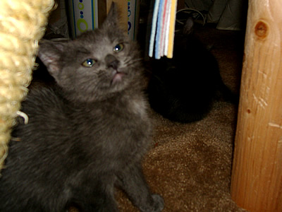
Genghis, scowling with regal ferocity at this upstart ribbon that has the unmitigated temerity to not immediately leap into his jaws.
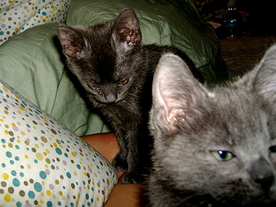
The two kittens are brothers from the same litter, and nearly identical. It's hard to tell them apart, except that Genghis has spikier, fuzzier fur, and Kubla is more sleek looking. Genghis got his name because he's rougher and bolder, as befits the founder of the Mongol Empire, whereas Kubla's more refined and aloof.
True to their names, Genghis has been the first to expand his territory out from the bedroom into the living room and kitchen, defeating the dog in the process. Whereas Kubla, like his namesake, has promoted economic growth, improved the imperial infrastructure, and introduced paper currency. Actually he's just pushed my PSP down behind the end table and overturned all the laundry hampers, but in the kitten world those are pretty solid accomplishments.
Today, Genghis has decided that my eyelids are the new hotness in cat toys. So he'll sneak up to me in bed and get real close to my face, staring deeply into my eyes, and then swat at them the moment I blink. Incidentally, one of my all-time greatest cat-related fears is the irrational (or so I thought) fear that a cat will abruptly scratch out my eye.
Even though I've emotionally bonded with these crazy felines and have officially become a Cat Person, I am bound and determined not to become a cat-crazy Friday Cat Blogger. That's why I'm posting this on a Saturday.
Note for historical pedants: Not only am I aware that Kubla should be spelled "Kublai," or -- good Lord -- "Khubilai," preferring instead to use the spelling from the Coleridge poem, but I also use the non-academic-dork-approved older pronunciation of Genghis. Take that, history dweebs!
2007.06.09 | Zeitgeist
∗ ∗ ∗
"There is a general fatigue -- worldwide -- over the Bush years. We desperately have to start picking up the pieces, but in order to do that, we have to admit a certain amount of defeat. We're in the grieving process right now."
2007.06.09 | The Russian Kills Everybody
A desperate, hounded Tony flips and goes into witness protection. Carmela, seeing perhaps her last, best chance to take back her own life, refuses to go with him. Paulie and Phil Leotardo kill each other in a bloody shootout. The only mobster left standing is Silvio, who survives his injuries and, in an ironic twist for the command-shy consigliere, ends up as capo.
2007.06.09 | ZFive Hastily Composed Reactions to the Sopranos Finale
SPOILER ALERT FOR ANYONE WHO HASN'T YET SEEN THE SOPRANOS FINALE....
1. Fucking genius.
2. Sometimes your expectations are disappointed in a lousy way, and sometimes they're disappointed in a way that makes you glad they weren't fulfilled. Tonight was the latter. Except for Phil Leotardo getting killed, nothing I predicted would happen happened, but I think that's great. All of the predictions I read would have made for an entertaining and fan-pleasing but conventional ending. The ending we got was confounding, ambiguous, and meaningful in a way that will be thought about and discussed and dissected for years. The fans wanted entertainment and they got Art. David Chase needs to hire bodyguards for the next few years.
3. In retrospect, it was dumb to expect some kind of grand, operatic conclusion to The Sopranos. It was always about de-glamorizing the Mob and showing it for the banal criminal occupation it is. So Tony doesn't get to be a hero or a tragic hero. He just lurches on through his unromantic, fucked-up life, to whatever fate that people like him get. It's really the only ending that could be completely true to the spirit of the series. Everyone always called it the anti-Godfather, so why should anyone be surprised that we got the ultimate anti-Godfather conclusion?
4. I don't think Tony dies in the end. Given the point I think Chase was trying to make with the episode, there's really no need, dramatically, for him to die. In the end, it doesn't much matter if he does or not.
5. One prediction I made about the show that did come true is that there would be absolutely NO WAY they would end the show so that there couldn't be a feature film down the line.
2007.06.16 | Saturday Morning's Alright (For Working My Ass Off)
I came in at six this morning (the store opens at nine) so I could get a head start on stuff and, with any luck, leave early. You’d think that going to work super early would suck, but paradoxically it makes my work days a lot easier.
Mornings are typically the most stressful part of the day, because there’s all this stuff left over from the day before (marking in, tagging, sorting clothes), and stuff to do that day (run the machine/washer, hang clothes). And I can’t run the machine — if I want to be super efficient, anyway — until all the clothes from yesterday are ready to go, so it’s a little frantic trying to get the process going before the store opens and customers start coming in.
Getting in early, then, is nice because you can take your time and ease into the day all “chillaxed.”
2007.06.16 | Ugly Design = Good?
Mrs. B tipped me to this interesting article about visually ugly sites like MySpace that are nonetheless insanely popular.
Now you know this is the kind of article that freaks the shit out of graphic designers everywhere. You're already defensive from having to justify your existence all the time, and now here's this burgeoning "ugly is good" trend that threatens the already shaky foundational principles of your chosen profession. It's like being a four-star chef and finding that the latest gourmet fad is Spam sandwiches on Wonder bread. (Mmm...Spam on Wonder bread.)
What's kind of odd to me though is this more or less unquestioned assumption about what defines ugly. Ugliness can be the result of bad taste, but can also result simply from a complete disregard for aesthetics altogether. So when one asks the question of whether or not ugly design is good, doesn't one (or two, if you're discussing this with a friend) have to differentiate between the two "types" of ugliness? Craigslist is pretty ugly, at least to mine eyes, but it's ugly because a slick look couldn't be more irrelevant to what people want to do on that site, which is find prostitutes. On the other hand, many MySpace pages are not just deliberately, but aggressively ugly, because MySpace allows users with no discernible design knowledge, or design sense, to create designs.
But what does that say. What about the MySpace user who creates an ugly design, not because he/she has bad taste, but because he/she lacks the tools and know-how to take the glorious fantasia in her imagination and translate it to a web page? Or someone who intentionally creates "bad" designs from an aesthetic based on dissonance and chaos?
Or is the question itself bigoted, in its rigid assumptions and the underlying condescension towards non-designers? Why am I asking you?
2007.06.19 | The One Year Itch
“It is our considered opinion that, as a general principle, it is preferable to ‘burn out’ than merely to ‘fade away.’”
— Def Leppard
For the past few weeks I’ve been stuck in work doldrums. I’m not feeling the dry cleaning love. Part of it is I’m tired and a little burned out. I had to run the store by myself the first week of June while my mom took a holiday in New York. Not much to say about that experience except that I really needed about a week to recover from that, and what I got was Sunday.
On top of which I’ve then got to work with someone who’s just taken a holiday in New York and got to shake hands with Matt Lauer and go on a shopping spree at Sak’s, and then has to come back and work at a frickin’ dry cleaners. Surly? A little, yeah.
Every time I see a customer pull up in front of the store, I want to scream. I just really don’t want to be doing this anymore. A lot.
The other thing is that, after what in a couple weeks will be one full year of working here, I’ve gotten pretty good at what I’m doing. Enough so that it’s not all that challenging anymore. This place is running better now than when I got here. The operation is extremely efficient. Mistakes, ruined and misplaced clothes, all way down. Even four or five months ago, there’s no way I could have run this place by myself for longer than a couple days. I’m pleased, of course, but the down side is that now I don’t really have anything to lose myself in, except the everyday drudgery and routine. So, things that used to be minor annoyances compared to the huge problems, now feel even more annoying.
I can’t think of a single job I’ve ever had that I’ve stayed in for longer than a year, maybe a year and a half. And the reason for that is always the same: once I get good enough at it to achieve some kind of mastery, the job loses its challenge, and I lose interest. And maybe that’s the root of a lot of my problems — not being able to sustain my motivation beyond the initial crisis stage. Or maybe it goes deeper, to the very fact that I base my commitment on motivation at all.
I think I have a pretty good work ethic, but it’s flawed. And the flaw is that too much of it is based on mood. I do things when I’m inspired to do them, when I’m overtaken by some kind of visionary zeal. The idea of just working for the sake of working, without a higher goal or mission, is not that appealing to me. But I think I need to develop a taste for that if I’m ever going to accomplish the things I want to. Hey, maybe that can be my mission. Wait, stop that.
2007.06.19 | Rantlet
Nothing makes me feel like stabbing a customer in the eyes with the handle of a lint roller than one who stands at the counter jabbering into a cell phone, making me stand there and wait for him to hang up before he condescends to transact with me. Motherfucker, your time may be pure platinum to you, but to me it’s not worth the toilet paper it would take to wipe it off my ass. Get off your fucking phone, hand over your clothes and/or money, and get the fuck out.
Early on, I used to actually just stand there and wait, but now I give the customer five seconds and then just go back to whatever it was I was doing. If they hang up and then have the gall (and they always do) to be annoyed that I wasn’t standing watch like a loyal lapdog when they were ready for me, I club them over the head with a stapler and stuff their unconscious bodies into the dry cleaning machine before running the ‘02’ cycle (the long one, for whites).
2007.06.22 | The Store
Yesterday the ceiling caved in at the back of the store. A water pipe between the ceiling and roof cracked and sprayed water all over the pressboard panels, which collapsed into big soggy chunks. A bunch of clothes and a couple of giant comforters were covered in crap and dirty water. Laundry was next to impossible because of all the pressboard oatmeal all over the floor, and because water was still dripping from everywhere. Our handyman came and shut off the water, which meant I had to shut down the boiler, which meant the end of work for that day.
Normally it’s nice to get a break from work and leave early, but in this business it’s not much of a break. It’s not like work stops happening just because you’re not there. It piles up. You take three hours off of work, and the next morning you have three hours of work waiting for you. There’s no “vacation.” There’s no “sick time.” You just move your hours around.
This morning I come to the store and there’s a mountain of clothes waiting for me. The back of the store is still in shambles. There’s nothing for the pressing ladies to press, so I’ll have to bust my ass getting something out there by the time they come in. And I just want to break, but I can’t. I want to quit, but I can’t.
From time to time there’s talk about me eventually taking over this business. It’s tempting sometimes. The money is better than I would make at the kinds of jobs I usually have, and it’s nice not to have to work for the Man. (Of course, since I clean the Man’s clothes, I guess I am still working for the Man.) But really, I don’t want to be doing this for a living. To be honest, I fucking hate this place. But if I left, my mom would have to sell the store to pay off her debts, which would wipe out her retirement. So I’m staying until something happens. Either my mom finds some venture that will support her, or she pays down her bills enough so she can sell the business and have money left over, something like that.
I’m glad to be able to help my mom. But it doesn’t leave me with much. I’m going to be stuck working my ass off at this store for another year, maybe more, and at the end of that, I’ll be forty years old and I’ll have nothing.
2007.06.26 | God Bless Dumberica
This Newsweek poll pretty handily sums up the reasons why I continue to withdraw from the human race.
81% - Don't know the name of the Chief Justice of the Supreme Court.
8% - Think they know, but don't.
5% - Think Newt Gingrich is the Speaker of the U.S. House of Representatives.
41% - Think Saddam was behind the 9/11 attacks.
11% - Think Osama bin Laden has been captured.
8% - Think Gorbachev is the president of Russia.
5% - Think Brezhnev is the president of Russia.
13% - Yes, that's right, 13 out of every 100 people currently permitted to walk the streets and possibly operate motor vehicles thinks either Gorbachev or Brezhnev is the current president of Russia.
4% - Think the American "global empire" predated the Roman Empire.
One thing I like about the Newsweek poll is that it helpfully supplies the correct answers in bold, like on question 5 where it asks if the U.S. is losing the fight against al-Qaeda or radical Islamic terrorism, and the correct answer is "no."
Also, the same poll that shows 4% of Americans believing that Andrew Jackson was a staunch opponent of global warming, misspells "Jane Austen." We are so fucking doomed.
2007.07.07 | One Down
So, this week marks the one-year anniversary of the start of my illustrious dry cleaning career. What have I learned? Let's find out.
1. Running a dry cleaning establishment is hard work. So much harder than I imagined it would be. The labor itself is intense, but mostly it's the stress of dealing with the insane schedule and demanding customers. If you're anything like me when it comes to clothes, you'd be pretty damn well surprised at how emotional adults can get over a frickin' shirt.
2. Not only can you not please everyone, but you can't even please the people you please. One of the sad facts about customer service is that, the higher your level of service, the higher your customers' expectations. One of the things my dad told me was, don't work too hard to get the clothes perfectly clean, because the customers will just start to expect perfection all the time. At the time I was shocked by that slackerly-sounding attitude, but now I see his point. Customers spoil easily. The reality is that not all stains can be removed, at least not without damaging the clothing. So if you bust your ass getting everything completely spotless, customers will just start wanting that all the time, and you'll spend all your time busting your ass, just to achieve the same level of satisfaction that you had before when you weren't wearing yourself out.
3. Good organization is half the job. Naturally, it's essential to be efficient, fast, hard-working, etc., but I believe the foundation of running an effective operation is managing your time well, and setting up your workflow so that things run smoothly even if you're having an off day. It's amazing, the difference that a small change can make.
4. Customers (usually) value good service over low prices. One thing I did when I started here was try to attract customes with discounts and respond to any complaint or mistake by giving free dry cleaning. Which definitely is a good idea sometimes, but for the most part, my customers come back, not because I cleaned their shirt for free, but because they know I give a shit about them and will make a real effort to do a good job for them.
5. Customers so love it when you remember their names. They really do. I can name at least half a dozen regulars who will never go anywhere else, because when they come here they can just toss their stuff on the counter and leave, and they know I know who they are.
6. Customers are freaking insane. The first time someone brought in a $20 long-sleeved shirt and paid $15 to have it turned into a short-sleeved shirt, I thought he was crazy. The fifth time someone did that, I realized that EVERY SINGLE ONE OF OUR CUSTOMERS IS BATSHIT INSANE. The current crazy ass crazy is one who bought a bunch of chef's toques and then brought them in and wanted them trimmed down by half. Why didn't he just buy toques he wanted in the first place? I don't know. Why don't you ask him? His phone number is 1-800-BATSHIT-INSANE.
7. People sure bleed a lot. Seriously. So much blood. Mother...oh God Mother, the blood! The best thing for blood stains I have found? Hydrogen peroxide. But you have to be careful because sometimes it will bleach fabrics, though I haven't had this happen yet.
8. Get to work early. Sometimes I think the extra half hour of sleep (or goofing off) in the morning is worth getting in later than usual, but it never is. The emotional state that I'm in when I open the store is usually the state I remain in for the rest of the day. So if I start out harried and stressed, that's how the whole day goes. It's totally worth it to bust my ass getting to the store super early and starting the day totally organized and ready to go.
9. You get the customers you deserve. There was a time when I would kiss every customer's ass, no matter how unpleasant he or she was. It was part of the idea that you can't afford to lose even a single customer. But I stopped doing that. Why? Because my lips were getting chapped, for one thing. But also, I realized that, if you behave in a way that attracts the kind of customers you want while driving away the kind of customers you don't want, eventually you'll end up with more of the kind of customers you want. If you're in a good location and are running a good business, there will usually be new customers to replace the old ones who go away.
At my place, over the past year I've found that the customers overall have been a lot easier to deal with, and I think it's because, although the total number of customers is about the same, about 10% of the jerks who used to be regulars have gone away and been replaced by new regulars, most of whom are easy to deal with.
10. Labor relations are complicated. I was much more of a Marxist before I started working here and found myself in charge of people for the first time. I'm still very much pro-labor, but I guess I have more sympathy for management. It's difficult to balance the needs of the job against the needs (or wants) of the worker. You have to be a little adversarial sometimes, because otherwise employees will walk all over you.
Both parties have a lot at stake, and both are in kind of a vulnerable position -- from the worker's POV, they're in a situation that essentially belongs to the employer, and as subordinates they only have as much power as the employer and/or government will allow them. From the owner's POV, the worker is sort of like a guest in their house -- if they break a vase, it's the owner's vase they're breaking, not the worker's. The worker has enormous potential to ruin a business. It's a little scary from that perspective. And workers are like customers -- easily spoiled. You give them more, they eventually take it for granted and require even more to maintain the same level of satisfaction. Sometimes it's hard to find that line of fairness that lies between both parties' interests.
There's so much more stuff, but ten is a good round number and this entry is long enough already.
It's been a fucking grueling year, and for a good part of it I truly felt like I was in hell. It's just so crazy to think about. You get into a bad spot in life, you have basically three options: run away from it, let it drive you insane, or deal with it somehow. What do you do, if the first two options aren't really available to you, and you have to deal with the situation, but you can't because you've truly (so you think) reached the limit of your capacity to deal? You have nothing left to give, but the days don't stop coming, you have to somehow keep getting up and keep dealing with this undealable situation.
At one point I felt like I had reached that end point, I just couldn't keep going. Finally I prayed to God for strength. And I felt like I got some kind of response. The response I heard in my mind was, "You already have the strength to get through this." And I thought, "Great, thanks for nothing." But it was true. Either you have the strength, or you collapse and die. Well, I didn't die.
2007.07.12 | Morning Bitchin'
(1) Extremely Important Cell Phone Guy came in this morning, jabbering away without the slightest acknowledgment of anything or anyone around him. I didn't have anything else to do at the moment, so I just stood and stared fixedly at him for several long moments until he finally deigned to tear himself away from his Extremely Important Phone Call long enough to hand over his credit card.
Someday, they'll find a way to implant some kind of cell phone/wi-fi device in your head, so you can make financial transactions and phone calls without even physically moving. At that point, guys like Extremely Important Cell Phone Guy can just be entombed in gel-filled tubes and no longer be required to be even minimally aware of their surroundings.
(2) Driving to work this morning, I was trying to decide whether Mondays or Thursdays are the worst day of the week. On the one hand, Mondays blow because Mondays, duh, blow. At the store, Mondays are the busiest day of the week, because there's a ton of clothes to clean and a lot of customer traffic. But then, you've had a weekend to rest, so you're also relatively refreshed. On the other hand, Thursdays suck because you're all worn out from the week, but it's not Friday yet so you don't have that good Friday feeling to get you through the day. I guess what it comes down to is Mondays blow and Thursdays suck. In this way are we propelled helplessly through week after week until our inevitable decay and oblivion.
(3) When I drive to work in the morning, all around me I see other commuters, all "ughh" and just schlepping their way to whatever jobs they have. Most of these people probably hate their jobs, or at the very least, they'd rather be chillaxing at home, maybe getting drunk, fornicating, stuff like that. Sometimes I think, what if we bred a race of idiots as a slave class, to work and work for subsistence wages while the rest of us kicked back and enjoyed the fruits of their labors? Then I think, WE ALREADY HAVE DONE THAT. THAT RACE OF IDIOTS IS CALLED US.
2007.07.13 | Customers
"Wow, it gets pretty hot in here, huh?"
"Yeah."
"The pressing ladies...." [gesturing towards pressing ladies] "They don't get to take a shower in the middle of the day, huh?"
"Excuse me?"
"They can't take a shower during the day?"
"No."
"Yeah, I guess it would be bad for their health to do that."
"Uhm."
2007.07.14 | Mellow Saturday
I hate to jinx myself by saying something like this, but today has actually been a pretty easy day so far. I didn’t get in as early as I wanted, but everything got tagged and sorted, comforters got folded and bagged, and I was ready to “rock” (in the sense of “taking in, tagging, sorting, and dry cleaning clothes, as well as giving people their washed and pressed clothes and accepting money in exchange”) by 9 a.m.
2007.07.14 | I think I know I mean ah yes but it's all wrong
I wonder how much of life is taken up with efforts to impose some kind of coherent order upon the chaos of existence. My experience at the dry cleaners is just life in miniature. My day pretty much is just about taking the chaos I find in the morning when I come in, and sorting everything out, processing everything, making everything tidy and neat and orderly.
What am I. Am I a dry cleaner who happens to write, or a writer who happens to be a dry cleaner. Does it even matter? What is this weblog anyway. Go on now, I'm trying to sort.
2007.07.21 | Store's Bath
The water got shut off in my neighborhood yesterday. I’m not sure what the problem was, but oh man. I can do without electricity, but DO NOT DEPRIVE ME OF WATER. Something like this really drives home how dependent I am on running water. For example: two people, one toilet, one remaining flush. A stinky scenario, my friends. Speaking of which, I usually take a shower after I come home from work, especially in the summertime when I’m sweating all day and coated with chemicals. So not taking a shower yesterday was not an option. I ended up taking kind of a Navy shower with bottled water. I recommend trying this if you want a startling reminder of how much water we consume without even thinking about it. I ended up using three bottles and half a jug of water we managed to eke out of the kitchen faucet.
This morning, though, I took kind of a sponge bath at the store. It was actually not bad. We use a lot of 30-gallon plastic bins here, so I took an empty one, set it by the big sink in the back of the store, and stood in that. (First, though, I lined up a rolling cart full of comforters in a strategic position, to protect my delicate modesty as well as the sensibilities of any passersby.) Washed my hair in the sink and then sort of showered in the bin with a small plastic basin to rinse off with. I got just as clean as in the shower at home, but at home I don’t have an industrial washing machine right next to the bathtub that I can just toss my dirty clothes and towels into. Excellent!
I’m actually kinda tempted to do this every morning. Instead of coming in at 5 and turning on the boiler and waiting until 5:30 before I can wash clothes, I could come in at 4:30 and shower while the boiler is heating up, and be ready to go by 5. Super efficient!
2007.07.21 | I Love the Nightlife
The bathroom attendant sprayed me in the crotch with cologne. Later, I think I gave him $11 for a pack of Djarums but I'm not positive. This was on Sunday. It's Tuesday morning now and I'm still hung over. More later.
2007.10.08 | Customer of the Day
Today a gentleman comes in lugging three big Hefty bags full of clothes. He explains that he is in the midst of a divorce, and he needs to find out how much it will cost to clean these clothes, so he can report the amount to his divorce lawyer. “You’ll need gloves to handle these,” he says.
Why? Because she doused his clothes in roach spray.
2008.01.10 | The End is Near
Apparently, January is a slow time in the dry cleaning biz, because suddenly my mom has her pick of out-of-work dry cleaners to hire. We brought on this guy who used to be the dry cleaner at our closest competitor, before it abruptly closed a few months ago (a short, scandalous story which will be told later). He comes from a dry cleaning family and has a decade of experience, and he’s pretty good — though oddly clueless in certain key areas (owing, probably, to the fact that every dry cleaner has his own process).
Bottom line: THIS MAY BE MY FINAL WEEK AT THIS GODFORSAKEN HELL HOLE.
I’m pretty happy about that.
Update: After talking with my mom, I’ve agreed to stay until the end of January. So, not quite my final week, but since I’m spending the rest of my time here just supervising for a few hours in the morning, it’s gonna be the easiest damn stretch I’ve done since I started here!
2008.01.10 | The Secret Lives of Dry Cleaners
I’ll keep this short, as promised, because I’ve gotta hit the road in a minute. The juiciest dry cleaner gossip for the past few months has been the genuinely sad fate of the guy who owned — let’s call it Cartier Cleaners, one of the town’s swankier laundry joints. Apparently the guy got into the Bolivian Marching Powder bigtime, and it took over his life. When his wife left him he went into a cocaine-fueled downward spiral, eventually going bankrupt and being forced to (very abruptly, with no explanation) shut down his multiple area stores. He got in trouble with Johnny Law, and now he’s only got one suit of clothes to clean, and it’s orange.
When I first heard this story I didn’t know whether to be sad or laugh, because pretty much all of the dry cleaner types I’ve met in the past two years have been frumpy old dudes in polyester slacks. I just can’t picture these guys going on drug-crazy binges. I mean, where do they even find the time? I only wish I could muster up the mojo to party that hard. Sheesh.
Anyway, the postscript of this tragic story is that we ended up picking up a few new customers as a result, including one really famous guy I can’t name, and this one guy who was hands-down the biggest asshole customer I ever had to suffer, who left us for that other place and then had to come slinking back. But that’s yet another story….
2008.01.11 | Lame Duck
I used to go in at 5 a.m. and work frantically, marking in and tagging and sorting in the front, washing in the back, trying to beat the 7 a.m. opening time deadline. At any given moment, I had five or six separate processes going on at once, bouncing back and forth between them, coordinating my moves for maximum efficiency. Load up the front-loader with dark colors, 16-minute cycle. Delicate whites in the top loader, warm water, 6-minute cycle. First dry cleaning load, 40 pounds of khakis into the Widowmaker. Back to the counter, mark in a bag. Back to the front-loader, empty the darks, load in the jeans, darks into the big dryer. Empty the top-loader, load in delicate darks. Hang up the whites. Counter again, tag the stuff I just marked in. Sort into the dry cleaning bins by color. And so on.
Now? I roll in by 6:20 or so and open up for Gilberto, who’s waiting in his car. I make sure he’s got the startup procedure down, which he does. Then I go back into the office nook and web surf. At 7:00 I walk him through opening the store and sit back down. My mom gets there at ten and that’s it, I’m done. I go home.
A week ago, if you gave me a name on one order out of the fifty or so for that day, and asked me where an item from that order was, chances were I could tell you exactly where it was in the process.
Now? I have no idea what’s going back there. I don’t even go into the back of the store anymore, except to use the restroom.
I used to look at a pile of clothes and see customers’ faces. Now they’re just clothes again.
At one time the store literally couldn’t function without me there. In just a few days I’ve become practically irrelevant. Already I can see the place sort of blurring into the form it’ll take after I’m gone. Part of me fights that. It doesn’t feel right, the way the other customers interact with Gilberto, the different — not worse, not better, just not the same — dynamic, the different sense of the counter. The rhythm of the place feels all wrong, but I know that’s just me.
I’ve spent so much of myself over the past couple of years in this place. Time, blood, sweat, tears. You can’t do that and not create some kind of intimacy with the space around you. The cliche is true: it becomes part of you. You’re absorbed into this great beastly organism, but you absorb it, too. The store became me, and now I’ve pulled loose of it, and now it’s not me anymore.
And me, I’m entering some dim, undefined zone between this place and the future. I still want to call myself a dry cleaner, but I’m not a dry cleaner anymore. I don’t know what to call myself now, but I guess I’ll find out soon enough.
2008.01.12 | 2008
Hannah says I seem different now, that I’m more jokey and actually seem giddy at times. I’m not aware of feeling all that different, except I do feel a certain lightness of spirit that I haven’t felt in a long time.
I don’t know that it’s just leaving the store, either, that’s improving my mood. I think part of it is 2008 itself, knowing that this is going to be a year of positive changes. Moving to a new city, starting a whole new way of life, the prospect of restoring the creative side of me that has been like a neglected foster child for a long time, even before I came to Vegas.
We’re done with George Bush this year. I can’t even begin to tell you how joyful that makes me. Between 2000 and 2004, I was angry, sure, but I figured that the Bush election (or Supreme Court installation, rather) was just some kind of monumentally badly-timed national brain fart. We’d get rid of him in ‘04 and get back to real life. It wasn’t until 2004 that the mask of inexpressible outrage settled over me. But now I can see the clouds starting to part and some sunshine pouring through, and man does that feel good.
I think it’s all gonna be okay.